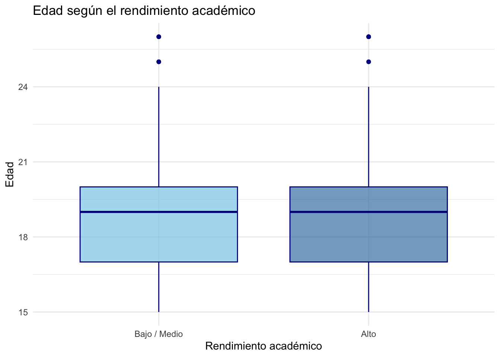
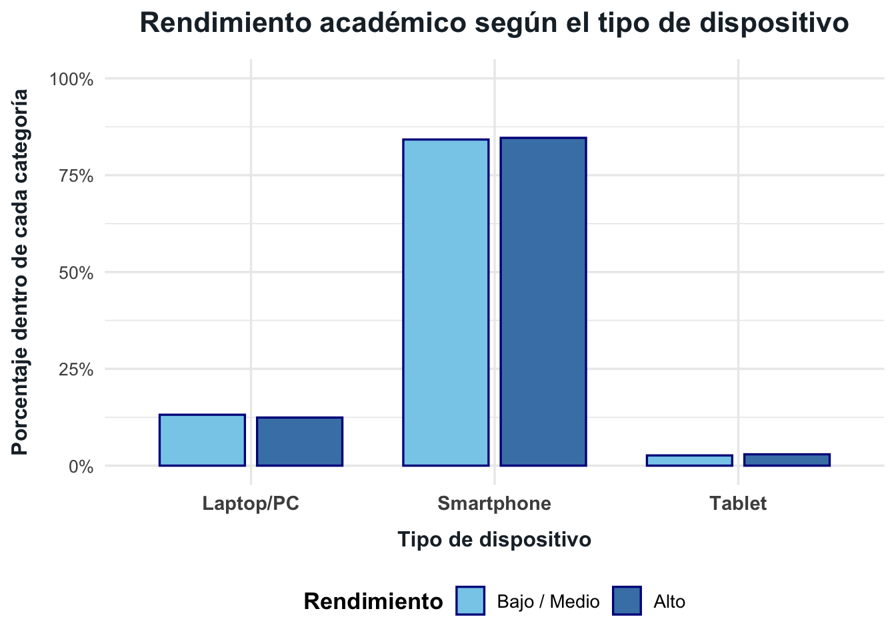
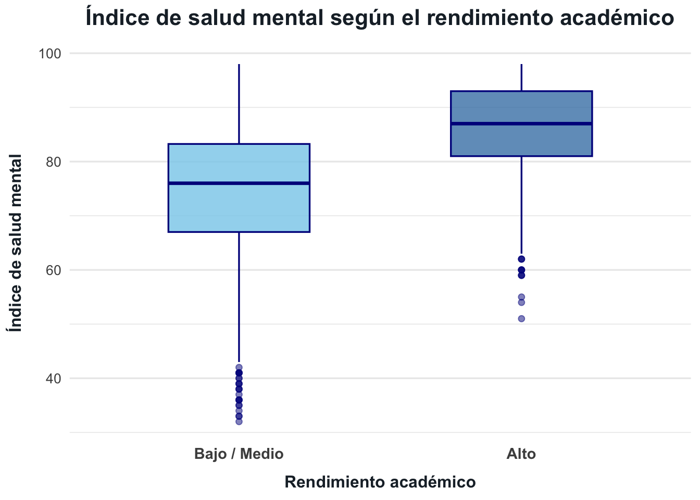
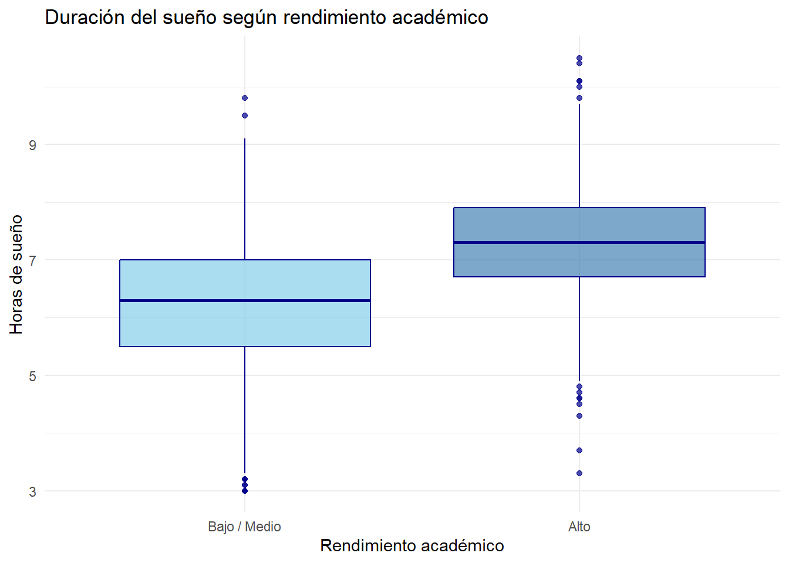
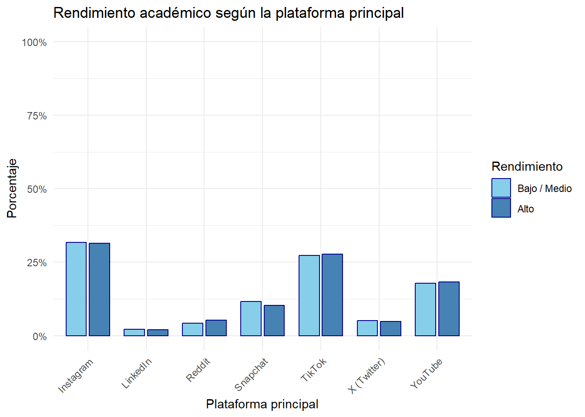
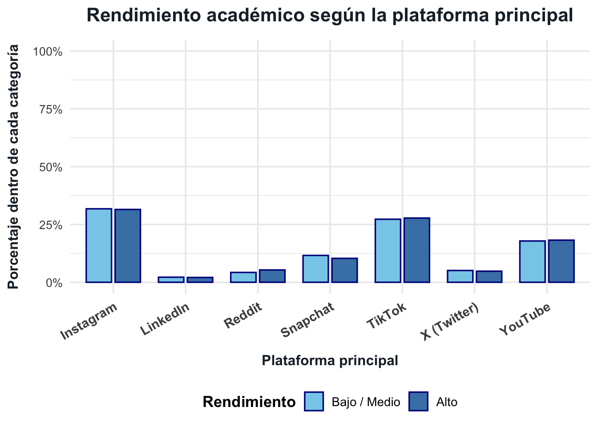
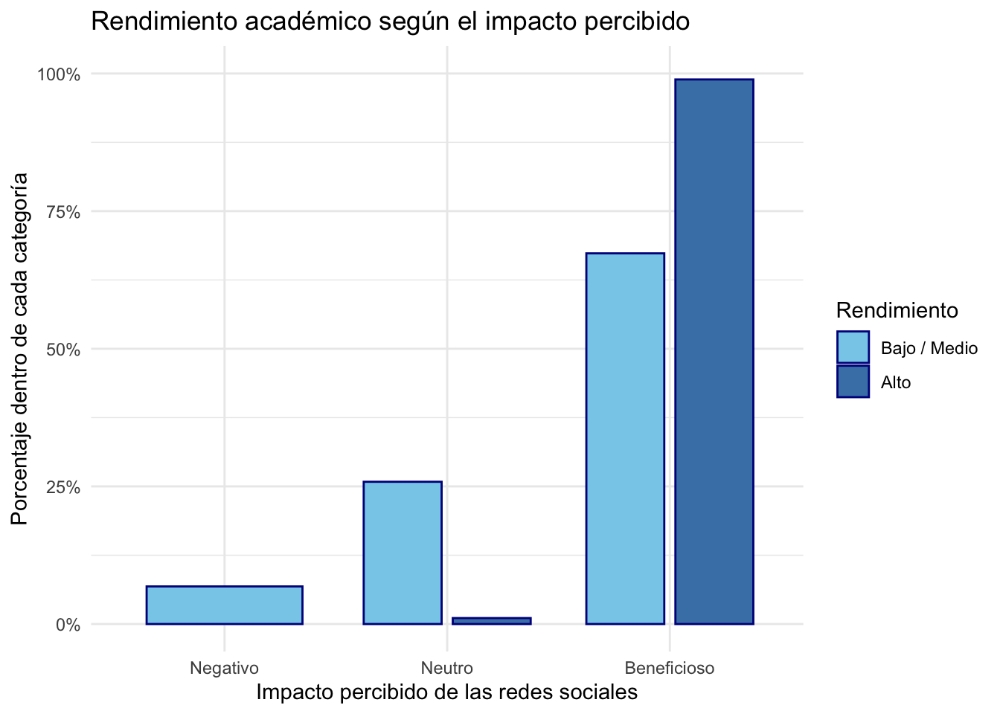
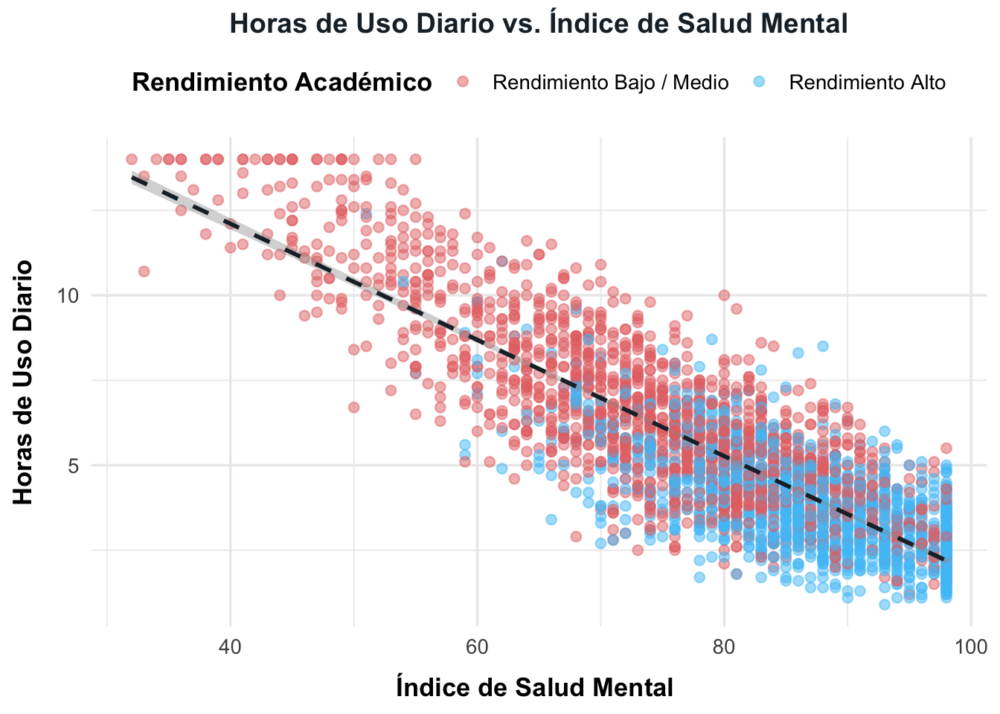
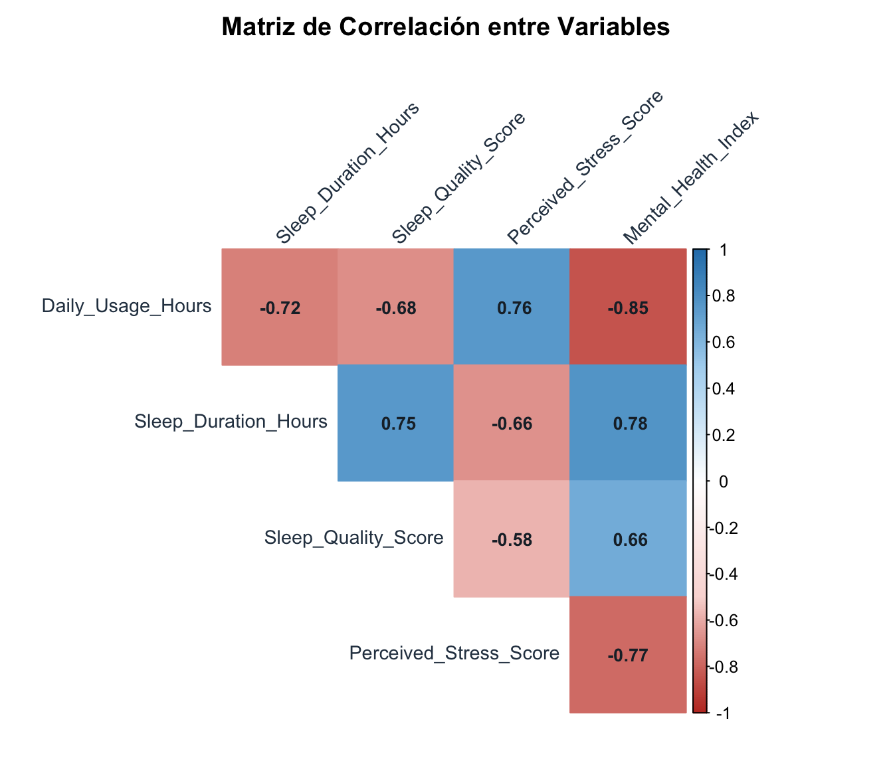
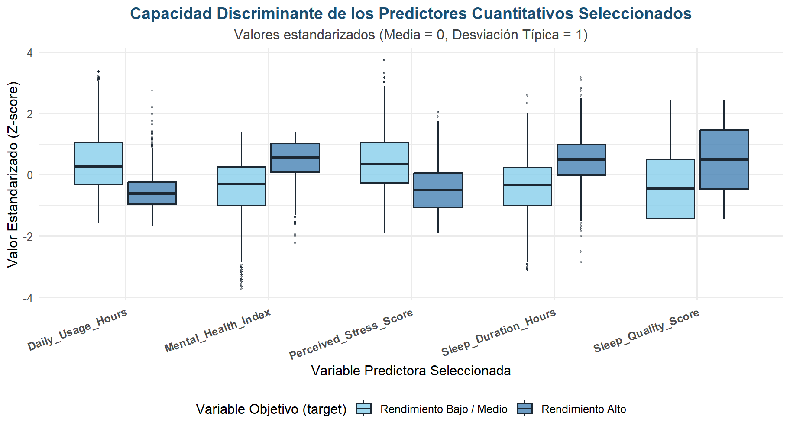

Informe
1 Introducción y Contexto del Proyecto
Este trabajo aborda un análisis exploratorio de datos (EDA) y modelado predictivo basado en el conjunto de datos Social_media_impact_on_life.csv. Los datos proceden de Kaggle, la mayor plataforma y comunidad global de ciencia de datos, aprendizaje automático y analítica avanzada, donde investigadores y profesionales de todo el mundo comparten repositorios para el desarrollo de proyectos y análisis empíricos. Tal como se especifica en la documentación oficial del repositorio, este conjunto recopila datos reales a partir de encuestas estructuradas a una amplia muestra de estudiantes, reflejando su realidad académica y digital.
El objetivo principal de nuestro proyecto es analizar, comprender y predecir el rendimiento académico de los alumnos, evaluando de forma empírica cómo el ecosistema digital modela su día a día. Para lograrlo, cada observación detalla información rigurosa estructurada en cinco grandes bloques de variables:
- Identificación y demografía: Variables que caracterizan al participante, abarcando su identificador único, la edad, el género y el nivel académico cursado.
- Hábitos tecnológicos: Métricas sobre la exposición digital, incluyendo el promedio de horas de uso diario, el consumo adicional durante los fines de semana, la plataforma de redes sociales preferida, el tipo de dispositivo y el hábito de uso a altas horas de la noche.
- Patrones de descanso: Indicadores asociados al sueño del estudiante, como la duración media del descanso nocturno en horas y una escala cuantitativa sobre la calidad del sueño.
- Bienestar y salud mental: Métricas de naturaleza psicométrica, tales como la frecuencia de comparación social con otros usuarios, la puntuación de estrés percibido y un índice global de salud mental.
- Rendimiento y resultado global: Variables que cuantifican directamente el éxito académico (calificación o promedio académico GPA) y la percepción global del usuario de las plataformas digitales en la vida del estudiante (
Overall_Impact).
A lo largo de las siguientes secciones, llevaremos a cabo una fase exhaustiva de análisis exploratorio y contraste estadístico sobre nuestra partición de entrenamiento (train), con el fin de desentrañar patrones ocultos y preparar el terreno para los futuros modelos predictivos.
2 Metodología y Estrategia Analítica
Para garantizar el rigor científico, la reproducibilidad y evitar el sobreajuste o la fuga de datos, este proyecto sigue una estrategia metodológica estructurada en fases bien diferenciadas.
2.1 Partición y División del Conjunto de Datos
Dado el volumen total de observaciones, el conjunto de datos original se ha dividido en tres particiones independientes mediante un esquema de muestreo estratificado basado en la variable objetivo:
- Conjunto de Entrenamiento (Train, 65%): Es el subconjunto principal sobre el cual realizamos la totalidad del Análisis Exploratorio de Datos (EDA), el contraste estadístico de hipótesis y, posteriormente, el entrenamiento y la sintonización de los modelos predictivos.
- Conjunto de Prueba (Test, 21%): Reservado de forma iterativa para evaluar y estudiar la capacidad de generalización de los modelos entrenados en la fase previa.
- Conjunto de Validación (Validation, 14%): Se mantendrá completamente aislado hasta el final del proyecto. Su propósito es simular un caso real y riguroso ante datos nunca vistos (unseen data), permitiendo estudiar el rendimiento definitivo del modelo seleccionado.
2.2 Enfoque del Análisis Exploratorio de Datos (EDA)
El análisis exploratorio se aborda principalmente desde una perspectiva bivariante para estudiar la relación entre cada variable predictora y el target. Para ello, combinamos técnicas de visualización avanzada con herramientas de inferencia estadística:
- Análisis Visual:
- Para las variables cuantitativas y continuas, empleamos diagramas de cajas combinados y la representación explícita de la media estadística, lo que permite observar la forma de la distribución y las diferencias centrales entre grupos.
- Para las variables categóricas, ordinales y binarias, utilizamos gráficos de barras apiladas y tablas de contingencia que facilitan la comparación visual de las proporciones relativas frente a la variable objetivo.
- Contraste de Hipótesis Estadísticas: Complementamos la inspección visual con pruebas formales de significación, estableciendo un nivel de significación estándar de \(\alpha = 0.05\) (\(p\text{-valor} < 0.05\)):
- Test de Wilcoxon-Mann-Whitney (
wilcox.test): Aplicado para evaluar si existen diferencias estadísticamente significativas en las distribuciones o medianas de las variables cuantitativas según los grupos del target. - Test de \(\chi^2\) (Chi-cuadrado) de Independencia (
chisq.test): Utilizado para determinar la existencia de una asociación no aleatoria entre variables categóricas. - Test Binomial (
binom.test): Empleado en el contraste de proporciones para variables dicotómicas o de naturaleza binaria. - Test de Kruskal-Wallis (
kruskal.test): Aplicado como extensión no paramétrica para evaluar si existen diferencias estadísticamente significativas en la distribución de una variable cuantitativa continua cuando se compara a través de tres o más grupos independientes (como las categorías ordinales de la calidad del descanso).
- Test de Wilcoxon-Mann-Whitney (
3 Datos
El conjunto de datos analizado cuenta con un total de 4500 observaciones y 16 variables, abarcando la información estructural necesaria para el estudio.
A continuación, se presenta una tabla interactiva con una vista preliminar de los datos. Esta herramienta permite explorar las primeras filas de forma dinámica, facilitando la verificación inicial de los tipos de variables, la detección de posibles valores ausentes y la comprensión general de la estructura del dataset antes de proceder con los análisis estadísticos y los modelos.
3.1 Descripcion de las variables
- Student_ID: Identificador único (alfanumérico) asignado a cada alumno registrado en el estudio. Es una variable identificadora de tipo texto.
- Age: Edad del estudiante. Toma valores numéricos enteros.
- Gender: Identidad de género del estudiante. Es una variable categórica nominal que puede tomar 4 valores: Female, Male, Non-Binary y Prefer not to say.
- Academic_Level: Nivel académico o educativo que cursa el estudiante. Variable categórica ordinal con 3 niveles jerárquicos: High School, Undergraduate, Postgraduate.
- Primary_Platform: Plataforma de redes sociales principal utilizada ppor el usuario. Variable categórica con 7 niveles: Instagram, Tiktok, YouTube, Snapchat, Linked, Reddit y X.
- Daily_Usage_Hours: Promedio de horas diarias dedicadas al uso de redes sociales, es una variable numérica continua.
- Weekend_Extra_Hours: Horas adicionales de consumo digital durante los findes de semana. Es una variable cuantitavia continua que toma valores numéricos reales.
- Device_Type: Dispositivo principal desde el que accede a las redes, variable categórica con 3 niveles: Smartphone, Laptop/PC y Tablet.
- Sleep_Duration_Hours: Duración media del sueño por noche en horas. Variable numérica continua.
- Sleep_Quality_Score: Puntuación sobre la calidad del sueño. Toma valores numéricos enteros entre 1 y 5, donde los valores más bajos indican peor descanso.
- Late_Night_Usage: Indica si el usuario utiliza las redes sociales a altas horas de la noche. Es una variable binaria que toma 2 niveles dicotómicos: Si y No.
- Social_Comparison_Frequency: Frecuencia con la que el estudiante se compara con otros en las redes sociales, variable categórica ordinal con 5 niveles ordenados: Never, Rarely, Sometimes, Frequently y Always.
- Perceived_Stress_Score: Nivel o puntuación de estrés percibido basado en escalas psicométricas.Es una variable cuantitativa continua que toma valores numéricos continuos en un rango de 1 a 30 puntos.
- Mental_Health_Index: Índice general de salud mental y bienestar psicológico del estudiante. Variable cuantitativa discreta que toma valores escalares enteros entre 0 a 100 puntos.
- Academic_Performance_GPA: Calificación o promedio académico ponderado (GPA). Es una variable numérica continua que toma valores numéricos reales continuos en una escala de 0.00 a 4.00.
- Overall_Impact: Evaluación global sobre el impacto neto de las redes sociales en la vida del usuario. Es una variable categórica ordinal con 3 niveles evaluativos: Beneficial, Neutral y Negative.
3.2 Estudio univariante
En esta sección realizamos una inspección descriptiva individual de todas las variables de nuestro conjunto de datos. Evaluamos las medidas de tendencia central (media y mediana), la dispersión y la distribución de frecuencias de factores demográficos, de descanso, psicológicos y de consumo digital.
| No | Variable | Stats / Values | Freqs (% of Valid) | Graph | Valid | Missing | |||||||||||||||||||||||||||||||||||
|---|---|---|---|---|---|---|---|---|---|---|---|---|---|---|---|---|---|---|---|---|---|---|---|---|---|---|---|---|---|---|---|---|---|---|---|---|---|---|---|---|---|
| 1 | Age [integer] |
|
12 distinct values | ![](data:image/png;base64,%20iVBORw0KGgoAAAANSUhEUgAAAJgAAABuCAQAAABxABKuAAAD+mlDQ1BpY2MAADiNjVVdaBxVFD6bubMrJM6D1Kamkg7+NZS0bFLRhNro/mWzbdwsk2y0QZDJ7N2daSYz4/ykaSk+FEEQwajgk+D/W8EnIWqr7YstorRQogSDKPjQ+keh0hcJ67kzs7uTuGu9y9z55pzvfufec+7eC5C4LFuW3iUCLBquLeXT4rPH5sTEOnTBfdANfdAtK46VKpUmARvjwr/a7e8gxt7X9rf3/2frrlBHAYjdhdisOMoi4mUA/hXFsl2ABEH7yAnXYvgJxDtsnCDiEsO1AFcYng/wss+ZkTKIX0UsKKqM/sTbiAfnI/ZaBAdz8NuOPDWorSkiy0XJNquaTiPTvYP7f7ZF3WvE24NPj7MwfRTfA7j2lypyluGHEJ9V5Nx0iK8uabPFEP9luWkJ8SMAXbu8hXIK8T7EY1V7vBzodKmqN9HAK6fUmWcQ34N4dcE8ysbuRPy1MV+cCnV+UpwM5g8eAODiKi2wevcjHrBNaSqIy41XaDbH8oj4uOYWZgJ97i1naTrX0DmlZopBLO6L4/IRVqc+xFepnpdC/V8ttxTGJT2GXpwMdMgwdfz1+nZXnZkI4pI5FwsajCUvVrXxQsh/V7UnpBBftnR/j+LcyE3bk8oBn7+fGuVQkx+T7Vw+xBWYjclAwYR57BUwYBNEkCAPaXxbYKOnChroaKHopWih+NXg7N/CKfn+ALdUav7I6+jRMEKm/yPw0KrC72hVI7wMfnloq3XQCWZwI9QxSS9JkoP4HCKT5DAZIaMgkifJU2SMZNE6Sg41x5Yic2TzudHUeQEjUp83i7yL6HdBxv5nZJjgtM/FSp83ENjP2M9rypXXbl46fW5Xi7tGVp+71nPpdCRnGmotdMja1J1yz//CX+fXsF/nN1oM/gd+A3/r21a3Nes0zFYKfbpvW8RH8z1OZD6lLVVsYbOjolk1VvoCH8sAfbl4uwhnBlv85PfJP5JryfeSHyZ/497kPuHOc59yn3HfgMhd4C5yX3JfcR9zn0dq1HnvNGvur6OxCuZpl1Hcn0Ja2C08KGSFPcLDwmRLT+gVhoQJYS96djerE40XXbsGx7BvZKt9rIAXqXPsbqyz1uE/VEaWBid8puPvMwNObuOEI0k/GSKFbbt6hO31pnZ+Sz3ar4HGc/FsPAVifF98ND4UP8Jwgxnfi75R7PHUcumyyw7ijGmdtLWa6orDyeTjYgqvMioWDOXAoCjruui7HNGmDrWXaOUAsHsyOMJvSf79F9t5pWVznwY4/Cc791q2OQ/grAPQ+2jLNoBn473vAKw+pnj2UngnxGLfAjjVg8PBV08az6sf6/VbeG4l3gDYfL1e//v9en3zA9TfALig/wP/JXgLtNfFGQAAACBjSFJNAAB6JgAAgIQAAPoAAACA6AAAdTAAAOpgAAA6mAAAF3CculE8AAAAAmJLR0QA/4ePzL8AAAAHdElNRQfqCh0VMxRnlNVxAAABoElEQVR42u3cUU7CQBRAUTHs0T3oenAPrlJ//KiGQS5Y6eA5f5pI5KbPdIapu/cHisdb/wKzESwSLNovv9jlHz+c+BP40l9uo5Zvcn/xq3x6Gnz/7dbvciVGMhIsEiwSLBIsEiwSLBIsEiwSLLp6aTQ2XmfOvMpcMdh9rjKNZCRYJFgkWCRYJFgkWCRYJFgkWCRYJFgkWCRYJFgkWCRYdOaO68HJzk9nb1Ef33Cee7v5EkYyEiwSLBIsEiwSLFrxk++x0V3dDEcIbhJs5ns6IxkJFgkWCRYJFgkWCRYJFgkWCRZ9WRrZuf/Zt7XkfR4V/01GMhIsEiwSLBIsEiwSLBIsEiwSLBIsEiwSLLrJJ98jM/wfgk0Fm2FzyUhGgkWCRYJFgkWCRYJFgkWCRYJFgkWCRYJFgkWCRYJFm9pAHNvO41yTBNvO41xGMhIsEiwSLBIsEiwSLJrkPmzk7w8XTB7s7w8XGMlo8itsbK1hvdtgaw3r3QarTj76uLgm/2GwUZrzrsl/GOy6raLdMverJ3KPel6M5E6jxn1YJFgkWPQBPK8mUjxQxnMAAAA9dEVYdGljYzpjb3B5cmlnaHQAQ29weXJpZ2h0IDIwMDcgQXBwbGUgSW5jLiwgYWxsIHJpZ2h0cyByZXNlcnZlZC6eZtwpAAAAI3RFWHRpY2M6ZGVzY3JpcHRpb24AR2VuZXJpYyBSR0IgUHJvZmlsZRqnOI4AAAAASUVORK5CYII=) |
4500 (100.0%) | 0 (0.0%) | |||||||||||||||||||||||||||||||||||
| 2 | Gender [factor] |
|
|
![](data:image/png;base64,%20iVBORw0KGgoAAAANSUhEUgAAAFcAAABmCAQAAAAU58XvAAAD+mlDQ1BpY2MAADiNjVVdaBxVFD6bubMrJM6D1Kamkg7+NZS0bFLRhNro/mWzbdwsk2y0QZDJ7N2daSYz4/ykaSk+FEEQwajgk+D/W8EnIWqr7YstorRQogSDKPjQ+keh0hcJ67kzs7uTuGu9y9z55pzvfufec+7eC5C4LFuW3iUCLBquLeXT4rPH5sTEOnTBfdANfdAtK46VKpUmARvjwr/a7e8gxt7X9rf3/2frrlBHAYjdhdisOMoi4mUA/hXFsl2ABEH7yAnXYvgJxDtsnCDiEsO1AFcYng/wss+ZkTKIX0UsKKqM/sTbiAfnI/ZaBAdz8NuOPDWorSkiy0XJNquaTiPTvYP7f7ZF3WvE24NPj7MwfRTfA7j2lypyluGHEJ9V5Nx0iK8uabPFEP9luWkJ8SMAXbu8hXIK8T7EY1V7vBzodKmqN9HAK6fUmWcQ34N4dcE8ysbuRPy1MV+cCnV+UpwM5g8eAODiKi2wevcjHrBNaSqIy41XaDbH8oj4uOYWZgJ97i1naTrX0DmlZopBLO6L4/IRVqc+xFepnpdC/V8ttxTGJT2GXpwMdMgwdfz1+nZXnZkI4pI5FwsajCUvVrXxQsh/V7UnpBBftnR/j+LcyE3bk8oBn7+fGuVQkx+T7Vw+xBWYjclAwYR57BUwYBNEkCAPaXxbYKOnChroaKHopWih+NXg7N/CKfn+ALdUav7I6+jRMEKm/yPw0KrC72hVI7wMfnloq3XQCWZwI9QxSS9JkoP4HCKT5DAZIaMgkifJU2SMZNE6Sg41x5Yic2TzudHUeQEjUp83i7yL6HdBxv5nZJjgtM/FSp83ENjP2M9rypXXbl46fW5Xi7tGVp+71nPpdCRnGmotdMja1J1yz//CX+fXsF/nN1oM/gd+A3/r21a3Nes0zFYKfbpvW8RH8z1OZD6lLVVsYbOjolk1VvoCH8sAfbl4uwhnBlv85PfJP5JryfeSHyZ/497kPuHOc59yn3HfgMhd4C5yX3JfcR9zn0dq1HnvNGvur6OxCuZpl1Hcn0Ja2C08KGSFPcLDwmRLT+gVhoQJYS96djerE40XXbsGx7BvZKt9rIAXqXPsbqyz1uE/VEaWBid8puPvMwNObuOEI0k/GSKFbbt6hO31pnZ+Sz3ar4HGc/FsPAVifF98ND4UP8Jwgxnfi75R7PHUcumyyw7ijGmdtLWa6orDyeTjYgqvMioWDOXAoCjruui7HNGmDrWXaOUAsHsyOMJvSf79F9t5pWVznwY4/Cc791q2OQ/grAPQ+2jLNoBn473vAKw+pnj2UngnxGLfAjjVg8PBV08az6sf6/VbeG4l3gDYfL1e//v9en3zA9TfALig/wP/JXgLtNfFGQAAACBjSFJNAAB6JgAAgIQAAPoAAACA6AAAdTAAAOpgAAA6mAAAF3CculE8AAAAAmJLR0QA/4ePzL8AAAAHdElNRQfqCh0VMxRnlNVxAAAA3ElEQVR42u3aUQqCQBSGUSfao3uo9dQeXGW9DZoOhKhzL5zvrZc4xC3wp/IZMnXrDcCN033+4h3ykB+lwR2Gsbdt1bR4lewYcHFxcXFxcXFxe4eLW/t5+Jn2vctllfnTZNn9Nmc2FyY7hmTcxe2+wuwMz8ZdhtwZ2l/4ZMeAi4uLi4uLi4vbO1zcmp3h6OwMuJs1ZpFnzDPenkXi/j4kOwZcXFxcXFxcXNze4eLWzCJHZxa5qs2dIerKsPp0xyB/wPiTGz1cXFxcXFxcXNze4eLWMu8M8Ut2DLhn9gVrExcr5n9DqAAAAD10RVh0aWNjOmNvcHlyaWdodABDb3B5cmlnaHQgMjAwNyBBcHBsZSBJbmMuLCBhbGwgcmlnaHRzIHJlc2VydmVkLp5m3CkAAAAjdEVYdGljYzpkZXNjcmlwdGlvbgBHZW5lcmljIFJHQiBQcm9maWxlGqc4jgAAAABJRU5ErkJggg==) |
4500 (100.0%) | 0 (0.0%) | |||||||||||||||||||||||||||||||||||
| 3 | Academic_Level [ordered, factor] |
|
|
![](data:image/png;base64,%20iVBORw0KGgoAAAANSUhEUgAAAGkAAABOCAQAAACJIvA/AAAD+mlDQ1BpY2MAADiNjVVdaBxVFD6bubMrJM6D1Kamkg7+NZS0bFLRhNro/mWzbdwsk2y0QZDJ7N2daSYz4/ykaSk+FEEQwajgk+D/W8EnIWqr7YstorRQogSDKPjQ+keh0hcJ67kzs7uTuGu9y9z55pzvfufec+7eC5C4LFuW3iUCLBquLeXT4rPH5sTEOnTBfdANfdAtK46VKpUmARvjwr/a7e8gxt7X9rf3/2frrlBHAYjdhdisOMoi4mUA/hXFsl2ABEH7yAnXYvgJxDtsnCDiEsO1AFcYng/wss+ZkTKIX0UsKKqM/sTbiAfnI/ZaBAdz8NuOPDWorSkiy0XJNquaTiPTvYP7f7ZF3WvE24NPj7MwfRTfA7j2lypyluGHEJ9V5Nx0iK8uabPFEP9luWkJ8SMAXbu8hXIK8T7EY1V7vBzodKmqN9HAK6fUmWcQ34N4dcE8ysbuRPy1MV+cCnV+UpwM5g8eAODiKi2wevcjHrBNaSqIy41XaDbH8oj4uOYWZgJ97i1naTrX0DmlZopBLO6L4/IRVqc+xFepnpdC/V8ttxTGJT2GXpwMdMgwdfz1+nZXnZkI4pI5FwsajCUvVrXxQsh/V7UnpBBftnR/j+LcyE3bk8oBn7+fGuVQkx+T7Vw+xBWYjclAwYR57BUwYBNEkCAPaXxbYKOnChroaKHopWih+NXg7N/CKfn+ALdUav7I6+jRMEKm/yPw0KrC72hVI7wMfnloq3XQCWZwI9QxSS9JkoP4HCKT5DAZIaMgkifJU2SMZNE6Sg41x5Yic2TzudHUeQEjUp83i7yL6HdBxv5nZJjgtM/FSp83ENjP2M9rypXXbl46fW5Xi7tGVp+71nPpdCRnGmotdMja1J1yz//CX+fXsF/nN1oM/gd+A3/r21a3Nes0zFYKfbpvW8RH8z1OZD6lLVVsYbOjolk1VvoCH8sAfbl4uwhnBlv85PfJP5JryfeSHyZ/497kPuHOc59yn3HfgMhd4C5yX3JfcR9zn0dq1HnvNGvur6OxCuZpl1Hcn0Ja2C08KGSFPcLDwmRLT+gVhoQJYS96djerE40XXbsGx7BvZKt9rIAXqXPsbqyz1uE/VEaWBid8puPvMwNObuOEI0k/GSKFbbt6hO31pnZ+Sz3ar4HGc/FsPAVifF98ND4UP8Jwgxnfi75R7PHUcumyyw7ijGmdtLWa6orDyeTjYgqvMioWDOXAoCjruui7HNGmDrWXaOUAsHsyOMJvSf79F9t5pWVznwY4/Cc791q2OQ/grAPQ+2jLNoBn473vAKw+pnj2UngnxGLfAjjVg8PBV08az6sf6/VbeG4l3gDYfL1e//v9en3zA9TfALig/wP/JXgLtNfFGQAAACBjSFJNAAB6JgAAgIQAAPoAAACA6AAAdTAAAOpgAAA6mAAAF3CculE8AAAAAmJLR0QA/4ePzL8AAAAHdElNRQfqCh0VMxRnlNVxAAAA0klEQVR42u3awQ3CMBAFURulR4qgHuiBKuFq58JpF+Yzc4uQojxpHSkr5mukdfn2A0j6T9KxXjwaDtZtVtx1ffBj/+laDHoW33+MyMGTREgSIUmEJBGSREgSIUmEJBEKJJ0+1Ds+pKub6yKiZNPR0qoIHLxA0naW7twF+XJmmvd4Ne0vtcDBk0RIEiFJhCQRkkRIEiFJhCQRCiS5x/vV3OPRCiR9WE3W/CGwkXReTTLff4GDJ4mQJEKSCEkiJImQJEKSCEkiFEhKX01mFDh4kgi9AbCpEje7M3wDAAAAPXRFWHRpY2M6Y29weXJpZ2h0AENvcHlyaWdodCAyMDA3IEFwcGxlIEluYy4sIGFsbCByaWdodHMgcmVzZXJ2ZWQunmbcKQAAACN0RVh0aWNjOmRlc2NyaXB0aW9uAEdlbmVyaWMgUkdCIFByb2ZpbGUapziOAAAAAElFTkSuQmCC) |
4500 (100.0%) | 0 (0.0%) | |||||||||||||||||||||||||||||||||||
| 4 | Primary_Platform [factor] |
|
|
![](data:image/png;base64,%20iVBORw0KGgoAAAANSUhEUgAAAD0AAACsCAQAAABiUWyEAAAD+mlDQ1BpY2MAADiNjVVdaBxVFD6bubMrJM6D1Kamkg7+NZS0bFLRhNro/mWzbdwsk2y0QZDJ7N2daSYz4/ykaSk+FEEQwajgk+D/W8EnIWqr7YstorRQogSDKPjQ+keh0hcJ67kzs7uTuGu9y9z55pzvfufec+7eC5C4LFuW3iUCLBquLeXT4rPH5sTEOnTBfdANfdAtK46VKpUmARvjwr/a7e8gxt7X9rf3/2frrlBHAYjdhdisOMoi4mUA/hXFsl2ABEH7yAnXYvgJxDtsnCDiEsO1AFcYng/wss+ZkTKIX0UsKKqM/sTbiAfnI/ZaBAdz8NuOPDWorSkiy0XJNquaTiPTvYP7f7ZF3WvE24NPj7MwfRTfA7j2lypyluGHEJ9V5Nx0iK8uabPFEP9luWkJ8SMAXbu8hXIK8T7EY1V7vBzodKmqN9HAK6fUmWcQ34N4dcE8ysbuRPy1MV+cCnV+UpwM5g8eAODiKi2wevcjHrBNaSqIy41XaDbH8oj4uOYWZgJ97i1naTrX0DmlZopBLO6L4/IRVqc+xFepnpdC/V8ttxTGJT2GXpwMdMgwdfz1+nZXnZkI4pI5FwsajCUvVrXxQsh/V7UnpBBftnR/j+LcyE3bk8oBn7+fGuVQkx+T7Vw+xBWYjclAwYR57BUwYBNEkCAPaXxbYKOnChroaKHopWih+NXg7N/CKfn+ALdUav7I6+jRMEKm/yPw0KrC72hVI7wMfnloq3XQCWZwI9QxSS9JkoP4HCKT5DAZIaMgkifJU2SMZNE6Sg41x5Yic2TzudHUeQEjUp83i7yL6HdBxv5nZJjgtM/FSp83ENjP2M9rypXXbl46fW5Xi7tGVp+71nPpdCRnGmotdMja1J1yz//CX+fXsF/nN1oM/gd+A3/r21a3Nes0zFYKfbpvW8RH8z1OZD6lLVVsYbOjolk1VvoCH8sAfbl4uwhnBlv85PfJP5JryfeSHyZ/497kPuHOc59yn3HfgMhd4C5yX3JfcR9zn0dq1HnvNGvur6OxCuZpl1Hcn0Ja2C08KGSFPcLDwmRLT+gVhoQJYS96djerE40XXbsGx7BvZKt9rIAXqXPsbqyz1uE/VEaWBid8puPvMwNObuOEI0k/GSKFbbt6hO31pnZ+Sz3ar4HGc/FsPAVifF98ND4UP8Jwgxnfi75R7PHUcumyyw7ijGmdtLWa6orDyeTjYgqvMioWDOXAoCjruui7HNGmDrWXaOUAsHsyOMJvSf79F9t5pWVznwY4/Cc791q2OQ/grAPQ+2jLNoBn473vAKw+pnj2UngnxGLfAjjVg8PBV08az6sf6/VbeG4l3gDYfL1e//v9en3zA9TfALig/wP/JXgLtNfFGQAAACBjSFJNAAB6JgAAgIQAAPoAAACA6AAAdTAAAOpgAAA6mAAAF3CculE8AAAAAmJLR0QA/4ePzL8AAAAHdElNRQfqCh0VMxRnlNVxAAABCElEQVR42u3aQQ6CMBQEUGq8o3fQ8+AdOKVuXCDGAg0tP+mbHRtfzHQxaZpew1m5nCZ3Sl/nH8/qxd/TH3oYblXh6eurz67RaDQajUZvzGKlTGW/UpQ0n2Op+Ge2Zq712XWUYzZ+qnjUL/33X98qL/EM3TJoNBqNRqPj03Z440TpelxcStcdxZlL6dpHrs+u0Wg0Go1Gx6ft8MaJ0vW48jjk2F2+43HI0Uewz67RaDQajUbHp+3wxonS9doO35/ccq/6SDt/aPvsGo1Go9FodHzaDm+cKF17l1I/aDQajUaj0ZnY4Y0TpevS+/CyvX7AfXjp0eyzazQajUaj0fHpKDu8bfrs+kT6DZdCKL7SAoQdAAAAPXRFWHRpY2M6Y29weXJpZ2h0AENvcHlyaWdodCAyMDA3IEFwcGxlIEluYy4sIGFsbCByaWdodHMgcmVzZXJ2ZWQunmbcKQAAACN0RVh0aWNjOmRlc2NyaXB0aW9uAEdlbmVyaWMgUkdCIFByb2ZpbGUapziOAAAAAElFTkSuQmCC) |
4500 (100.0%) | 0 (0.0%) | |||||||||||||||||||||||||||||||||||
| 5 | Daily_Usage_Hours [numeric] |
|
129 distinct values | ![](data:image/png;base64,%20iVBORw0KGgoAAAANSUhEUgAAAJgAAABuCAQAAABxABKuAAAD+mlDQ1BpY2MAADiNjVVdaBxVFD6bubMrJM6D1Kamkg7+NZS0bFLRhNro/mWzbdwsk2y0QZDJ7N2daSYz4/ykaSk+FEEQwajgk+D/W8EnIWqr7YstorRQogSDKPjQ+keh0hcJ67kzs7uTuGu9y9z55pzvfufec+7eC5C4LFuW3iUCLBquLeXT4rPH5sTEOnTBfdANfdAtK46VKpUmARvjwr/a7e8gxt7X9rf3/2frrlBHAYjdhdisOMoi4mUA/hXFsl2ABEH7yAnXYvgJxDtsnCDiEsO1AFcYng/wss+ZkTKIX0UsKKqM/sTbiAfnI/ZaBAdz8NuOPDWorSkiy0XJNquaTiPTvYP7f7ZF3WvE24NPj7MwfRTfA7j2lypyluGHEJ9V5Nx0iK8uabPFEP9luWkJ8SMAXbu8hXIK8T7EY1V7vBzodKmqN9HAK6fUmWcQ34N4dcE8ysbuRPy1MV+cCnV+UpwM5g8eAODiKi2wevcjHrBNaSqIy41XaDbH8oj4uOYWZgJ97i1naTrX0DmlZopBLO6L4/IRVqc+xFepnpdC/V8ttxTGJT2GXpwMdMgwdfz1+nZXnZkI4pI5FwsajCUvVrXxQsh/V7UnpBBftnR/j+LcyE3bk8oBn7+fGuVQkx+T7Vw+xBWYjclAwYR57BUwYBNEkCAPaXxbYKOnChroaKHopWih+NXg7N/CKfn+ALdUav7I6+jRMEKm/yPw0KrC72hVI7wMfnloq3XQCWZwI9QxSS9JkoP4HCKT5DAZIaMgkifJU2SMZNE6Sg41x5Yic2TzudHUeQEjUp83i7yL6HdBxv5nZJjgtM/FSp83ENjP2M9rypXXbl46fW5Xi7tGVp+71nPpdCRnGmotdMja1J1yz//CX+fXsF/nN1oM/gd+A3/r21a3Nes0zFYKfbpvW8RH8z1OZD6lLVVsYbOjolk1VvoCH8sAfbl4uwhnBlv85PfJP5JryfeSHyZ/497kPuHOc59yn3HfgMhd4C5yX3JfcR9zn0dq1HnvNGvur6OxCuZpl1Hcn0Ja2C08KGSFPcLDwmRLT+gVhoQJYS96djerE40XXbsGx7BvZKt9rIAXqXPsbqyz1uE/VEaWBid8puPvMwNObuOEI0k/GSKFbbt6hO31pnZ+Sz3ar4HGc/FsPAVifF98ND4UP8Jwgxnfi75R7PHUcumyyw7ijGmdtLWa6orDyeTjYgqvMioWDOXAoCjruui7HNGmDrWXaOUAsHsyOMJvSf79F9t5pWVznwY4/Cc791q2OQ/grAPQ+2jLNoBn473vAKw+pnj2UngnxGLfAjjVg8PBV08az6sf6/VbeG4l3gDYfL1e//v9en3zA9TfALig/wP/JXgLtNfFGQAAACBjSFJNAAB6JgAAgIQAAPoAAACA6AAAdTAAAOpgAAA6mAAAF3CculE8AAAAAmJLR0QA/4ePzL8AAAAHdElNRQfqCh0VMxRnlNVxAAABs0lEQVR42u3cQU7DMBBAUYJ6R+5Az9PeoaeErdVM1Xy3bmbi/3awiOhXxgk2Yvn7EvG99w9QjcEgg0Gn9ovlhQtdwsXw/Mol02g/2qn7Kis/q+/c9v6kAziSkMEgg0FvXMMi0aOg9oNgcLDjPQgcSchgkMEgg0EGgwwGGQwyGGQwyGCQwSCDQQaDDAYZDDIYZDDIYFDXFvVl4r9g6dzTP95e/VaDD0EitU+SdghW++500YcMBhkMMhhkMMhgkMEgg0EGgwwGGQwyGGQwyGCQwSCDQQaDDAYZDDIYZDDIYNAOx2yROmeVSYLVOat0JCGDQQaDDAYZDDIYZDDIYJDBIINBBoMMBhkMMhiUZHsnst4jy7BDljjY/R5Zjh0yRxIyGGQwyGCQwSCDQQaDDAYlfnFdy3A+XipYhvNxRxIyGPR0JGf+HxWRDWtYhpUjD0cSMhhU6rUi8ul3s/LBPr3COpKQwSCDQeXXsMjIB8Ehg418EBwyWL8Hvwg2d+c0wbaO6bO7c5pg7xpTn5LQNHdYpGfraupgPWPqSEIGgwwGLe26d3X/PvTbvK8tNmIcSchgkMGgf9mPLFoT9OaMAAAAPXRFWHRpY2M6Y29weXJpZ2h0AENvcHlyaWdodCAyMDA3IEFwcGxlIEluYy4sIGFsbCByaWdodHMgcmVzZXJ2ZWQunmbcKQAAACN0RVh0aWNjOmRlc2NyaXB0aW9uAEdlbmVyaWMgUkdCIFByb2ZpbGUapziOAAAAAElFTkSuQmCC) |
4500 (100.0%) | 0 (0.0%) | |||||||||||||||||||||||||||||||||||
| 6 | Weekend_Extra_Hours [numeric] |
|
43 distinct values | ![](data:image/png;base64,%20iVBORw0KGgoAAAANSUhEUgAAAJgAAABuCAQAAABxABKuAAAD+mlDQ1BpY2MAADiNjVVdaBxVFD6bubMrJM6D1Kamkg7+NZS0bFLRhNro/mWzbdwsk2y0QZDJ7N2daSYz4/ykaSk+FEEQwajgk+D/W8EnIWqr7YstorRQogSDKPjQ+keh0hcJ67kzs7uTuGu9y9z55pzvfufec+7eC5C4LFuW3iUCLBquLeXT4rPH5sTEOnTBfdANfdAtK46VKpUmARvjwr/a7e8gxt7X9rf3/2frrlBHAYjdhdisOMoi4mUA/hXFsl2ABEH7yAnXYvgJxDtsnCDiEsO1AFcYng/wss+ZkTKIX0UsKKqM/sTbiAfnI/ZaBAdz8NuOPDWorSkiy0XJNquaTiPTvYP7f7ZF3WvE24NPj7MwfRTfA7j2lypyluGHEJ9V5Nx0iK8uabPFEP9luWkJ8SMAXbu8hXIK8T7EY1V7vBzodKmqN9HAK6fUmWcQ34N4dcE8ysbuRPy1MV+cCnV+UpwM5g8eAODiKi2wevcjHrBNaSqIy41XaDbH8oj4uOYWZgJ97i1naTrX0DmlZopBLO6L4/IRVqc+xFepnpdC/V8ttxTGJT2GXpwMdMgwdfz1+nZXnZkI4pI5FwsajCUvVrXxQsh/V7UnpBBftnR/j+LcyE3bk8oBn7+fGuVQkx+T7Vw+xBWYjclAwYR57BUwYBNEkCAPaXxbYKOnChroaKHopWih+NXg7N/CKfn+ALdUav7I6+jRMEKm/yPw0KrC72hVI7wMfnloq3XQCWZwI9QxSS9JkoP4HCKT5DAZIaMgkifJU2SMZNE6Sg41x5Yic2TzudHUeQEjUp83i7yL6HdBxv5nZJjgtM/FSp83ENjP2M9rypXXbl46fW5Xi7tGVp+71nPpdCRnGmotdMja1J1yz//CX+fXsF/nN1oM/gd+A3/r21a3Nes0zFYKfbpvW8RH8z1OZD6lLVVsYbOjolk1VvoCH8sAfbl4uwhnBlv85PfJP5JryfeSHyZ/497kPuHOc59yn3HfgMhd4C5yX3JfcR9zn0dq1HnvNGvur6OxCuZpl1Hcn0Ja2C08KGSFPcLDwmRLT+gVhoQJYS96djerE40XXbsGx7BvZKt9rIAXqXPsbqyz1uE/VEaWBid8puPvMwNObuOEI0k/GSKFbbt6hO31pnZ+Sz3ar4HGc/FsPAVifF98ND4UP8Jwgxnfi75R7PHUcumyyw7ijGmdtLWa6orDyeTjYgqvMioWDOXAoCjruui7HNGmDrWXaOUAsHsyOMJvSf79F9t5pWVznwY4/Cc791q2OQ/grAPQ+2jLNoBn473vAKw+pnj2UngnxGLfAjjVg8PBV08az6sf6/VbeG4l3gDYfL1e//v9en3zA9TfALig/wP/JXgLtNfFGQAAACBjSFJNAAB6JgAAgIQAAPoAAACA6AAAdTAAAOpgAAA6mAAAF3CculE8AAAAAmJLR0QA/4ePzL8AAAAHdElNRQfqCh0VMxRnlNVxAAABgUlEQVR42u3cQU6DUBRAUTHdo3vQ9egeXKVO0Rh+jqUU6D2zpkkhN0AI75fp6yni+d47cDQFQwVDl/mH6YYbeh9eLN9uufmrzHf98u9fYS+L337epwXrlEQFQwVDBUMFQwVDBUMFQwVDBUMFQwVDBUMFQwVDBUMFQwVDBUMrPtMfjznOYNUhyNKYYzzkWA6+l5nShlOjketyb6VrGCoYKhgqGCoYKhgqGCoYKhgqGCoYKhgqGCoYKhgqGCoYKhgqGCoYKhgqGCoYKhgqGCoYKhgqGCoYKhgqGCoYKhgqGCoYKhja0aLgZaNF7Vutsj5MsL28uYeCPcZfF5bhEXaMtfS31EUfFQwVDBUMFQwVDBUMFQwVDBUMFQwVDBUMFQwVDBUMFQwVDBUMFQwVDBUMFQz9mEs2qB37Ncjdy0B+vzolUcHQYVbvjGz1ysnTBNtqmUynJCoYKhgqGCoYKhg6zW3FsvXu0h4k2Hp3adM8/UdPK/70OjsCpxqZLvqoYKhg6Bukrh2xn4ZcJAAAAD10RVh0aWNjOmNvcHlyaWdodABDb3B5cmlnaHQgMjAwNyBBcHBsZSBJbmMuLCBhbGwgcmlnaHRzIHJlc2VydmVkLp5m3CkAAAAjdEVYdGljYzpkZXNjcmlwdGlvbgBHZW5lcmljIFJHQiBQcm9maWxlGqc4jgAAAABJRU5ErkJggg==) |
4500 (100.0%) | 0 (0.0%) | |||||||||||||||||||||||||||||||||||
| 7 | Device_Type [factor] |
|
|
![](data:image/png;base64,%20iVBORw0KGgoAAAANSUhEUgAAAIoAAABOCAQAAABV90ZNAAAD+mlDQ1BpY2MAADiNjVVdaBxVFD6bubMrJM6D1Kamkg7+NZS0bFLRhNro/mWzbdwsk2y0QZDJ7N2daSYz4/ykaSk+FEEQwajgk+D/W8EnIWqr7YstorRQogSDKPjQ+keh0hcJ67kzs7uTuGu9y9z55pzvfufec+7eC5C4LFuW3iUCLBquLeXT4rPH5sTEOnTBfdANfdAtK46VKpUmARvjwr/a7e8gxt7X9rf3/2frrlBHAYjdhdisOMoi4mUA/hXFsl2ABEH7yAnXYvgJxDtsnCDiEsO1AFcYng/wss+ZkTKIX0UsKKqM/sTbiAfnI/ZaBAdz8NuOPDWorSkiy0XJNquaTiPTvYP7f7ZF3WvE24NPj7MwfRTfA7j2lypyluGHEJ9V5Nx0iK8uabPFEP9luWkJ8SMAXbu8hXIK8T7EY1V7vBzodKmqN9HAK6fUmWcQ34N4dcE8ysbuRPy1MV+cCnV+UpwM5g8eAODiKi2wevcjHrBNaSqIy41XaDbH8oj4uOYWZgJ97i1naTrX0DmlZopBLO6L4/IRVqc+xFepnpdC/V8ttxTGJT2GXpwMdMgwdfz1+nZXnZkI4pI5FwsajCUvVrXxQsh/V7UnpBBftnR/j+LcyE3bk8oBn7+fGuVQkx+T7Vw+xBWYjclAwYR57BUwYBNEkCAPaXxbYKOnChroaKHopWih+NXg7N/CKfn+ALdUav7I6+jRMEKm/yPw0KrC72hVI7wMfnloq3XQCWZwI9QxSS9JkoP4HCKT5DAZIaMgkifJU2SMZNE6Sg41x5Yic2TzudHUeQEjUp83i7yL6HdBxv5nZJjgtM/FSp83ENjP2M9rypXXbl46fW5Xi7tGVp+71nPpdCRnGmotdMja1J1yz//CX+fXsF/nN1oM/gd+A3/r21a3Nes0zFYKfbpvW8RH8z1OZD6lLVVsYbOjolk1VvoCH8sAfbl4uwhnBlv85PfJP5JryfeSHyZ/497kPuHOc59yn3HfgMhd4C5yX3JfcR9zn0dq1HnvNGvur6OxCuZpl1Hcn0Ja2C08KGSFPcLDwmRLT+gVhoQJYS96djerE40XXbsGx7BvZKt9rIAXqXPsbqyz1uE/VEaWBid8puPvMwNObuOEI0k/GSKFbbt6hO31pnZ+Sz3ar4HGc/FsPAVifF98ND4UP8Jwgxnfi75R7PHUcumyyw7ijGmdtLWa6orDyeTjYgqvMioWDOXAoCjruui7HNGmDrWXaOUAsHsyOMJvSf79F9t5pWVznwY4/Cc791q2OQ/grAPQ+2jLNoBn473vAKw+pnj2UngnxGLfAjjVg8PBV08az6sf6/VbeG4l3gDYfL1e//v9en3zA9TfALig/wP/JXgLtNfFGQAAACBjSFJNAAB6JgAAgIQAAPoAAACA6AAAdTAAAOpgAAA6mAAAF3CculE8AAAAAmJLR0QA/4ePzL8AAAAHdElNRQfqCh0VMxRnlNVxAAABC0lEQVR42u3bUWrCQBRA0aa4RxfR9dQ9dJX604+J3NAoSkpyzp8IIbkwE5hHpusH9z63voH/SJQgSjiNPy6rN5ivaesbf7Xx0U/zv86rLvCz9RO8meUTRAmiBFGCKEGUIEoQJYgSRAmiBFGCKEGUIEoQJYgSRAl3x5F7P2hcZxoPbHd3Gv2AsYPlE0QJsz3l+8iD5WHveGrusz/zF4zlE0QJogRRgihBlCBKECWIEkQJogRRgihBlCBKECWIEkQJ5j7B3OeXuc8fRAmihIVh2P4+cnpEDsOO/g6yfIIoQZQgShAliBJECaIEUYIoQZQgShAliBJECaIEUYIowTAsTEf+cGOJ5RNECaKEG4gmEjc74YR6AAAAPXRFWHRpY2M6Y29weXJpZ2h0AENvcHlyaWdodCAyMDA3IEFwcGxlIEluYy4sIGFsbCByaWdodHMgcmVzZXJ2ZWQunmbcKQAAACN0RVh0aWNjOmRlc2NyaXB0aW9uAEdlbmVyaWMgUkdCIFByb2ZpbGUapziOAAAAAElFTkSuQmCC) |
4500 (100.0%) | 0 (0.0%) | |||||||||||||||||||||||||||||||||||
| 8 | Sleep_Duration_Hours [numeric] |
|
73 distinct values | ![](data:image/png;base64,%20iVBORw0KGgoAAAANSUhEUgAAAJgAAABuCAQAAABxABKuAAAD+mlDQ1BpY2MAADiNjVVdaBxVFD6bubMrJM6D1Kamkg7+NZS0bFLRhNro/mWzbdwsk2y0QZDJ7N2daSYz4/ykaSk+FEEQwajgk+D/W8EnIWqr7YstorRQogSDKPjQ+keh0hcJ67kzs7uTuGu9y9z55pzvfufec+7eC5C4LFuW3iUCLBquLeXT4rPH5sTEOnTBfdANfdAtK46VKpUmARvjwr/a7e8gxt7X9rf3/2frrlBHAYjdhdisOMoi4mUA/hXFsl2ABEH7yAnXYvgJxDtsnCDiEsO1AFcYng/wss+ZkTKIX0UsKKqM/sTbiAfnI/ZaBAdz8NuOPDWorSkiy0XJNquaTiPTvYP7f7ZF3WvE24NPj7MwfRTfA7j2lypyluGHEJ9V5Nx0iK8uabPFEP9luWkJ8SMAXbu8hXIK8T7EY1V7vBzodKmqN9HAK6fUmWcQ34N4dcE8ysbuRPy1MV+cCnV+UpwM5g8eAODiKi2wevcjHrBNaSqIy41XaDbH8oj4uOYWZgJ97i1naTrX0DmlZopBLO6L4/IRVqc+xFepnpdC/V8ttxTGJT2GXpwMdMgwdfz1+nZXnZkI4pI5FwsajCUvVrXxQsh/V7UnpBBftnR/j+LcyE3bk8oBn7+fGuVQkx+T7Vw+xBWYjclAwYR57BUwYBNEkCAPaXxbYKOnChroaKHopWih+NXg7N/CKfn+ALdUav7I6+jRMEKm/yPw0KrC72hVI7wMfnloq3XQCWZwI9QxSS9JkoP4HCKT5DAZIaMgkifJU2SMZNE6Sg41x5Yic2TzudHUeQEjUp83i7yL6HdBxv5nZJjgtM/FSp83ENjP2M9rypXXbl46fW5Xi7tGVp+71nPpdCRnGmotdMja1J1yz//CX+fXsF/nN1oM/gd+A3/r21a3Nes0zFYKfbpvW8RH8z1OZD6lLVVsYbOjolk1VvoCH8sAfbl4uwhnBlv85PfJP5JryfeSHyZ/497kPuHOc59yn3HfgMhd4C5yX3JfcR9zn0dq1HnvNGvur6OxCuZpl1Hcn0Ja2C08KGSFPcLDwmRLT+gVhoQJYS96djerE40XXbsGx7BvZKt9rIAXqXPsbqyz1uE/VEaWBid8puPvMwNObuOEI0k/GSKFbbt6hO31pnZ+Sz3ar4HGc/FsPAVifF98ND4UP8Jwgxnfi75R7PHUcumyyw7ijGmdtLWa6orDyeTjYgqvMioWDOXAoCjruui7HNGmDrWXaOUAsHsyOMJvSf79F9t5pWVznwY4/Cc791q2OQ/grAPQ+2jLNoBn473vAKw+pnj2UngnxGLfAjjVg8PBV08az6sf6/VbeG4l3gDYfL1e//v9en3zA9TfALig/wP/JXgLtNfFGQAAACBjSFJNAAB6JgAAgIQAAPoAAACA6AAAdTAAAOpgAAA6mAAAF3CculE8AAAAAmJLR0QA/4ePzL8AAAAHdElNRQfqCh0VMxRnlNVxAAABuUlEQVR42u3cW07DMBQA0QZ1j90DrKfsgVXCb8it1Ixl+8b2nL8iAdEIP+qQbr83ER/ZFzAag0EGg+77F1v21dyeL6bUr/TL2l/UvfinNPI4vP7JvqADhyRkMMhgkMGgy036UVw5M9fNAYJda910SEIGgwwGGQwyGGQwyGBQ6j7sOeD5ePLG9Vqb0jMckpDBIINBBoMMBhkMMhhkMMhgkMGgAc70o8x/KBgy2CN8pd97UIckZDDIYJDBIINB3VbJEY+jX+m4rcjcDNTjkIQMBhkMMhhkMMhgkMEgg0EGgwwGGQwyGGQwyGCQwSCDQQaDDAYZDDIYZDDIYFCj22z970L2ejK82X3J3g/F9Pp9DknIYJDBIINBBoMMBhkMMhhkMMhgkMEgg0EGgwwGGQwyGGQwqMqJ6yyPxZxR6Yh6vE9pKuWQhAwGDfmQ/DltbrxNHKzNvOqQhAwGFQzJlXZdUdEcts6uK3JIQgaDDAYZDDIYZDDo7bZi7V1XdGIftvKuK5r4zXdU4/ziX7DZh1+NsXL4C5vjE5hacpWEDAYtNelHfBnY9t/xPfmkX+pzF3GzEeMcBhkMMhj0BxDzLROocmtwAAAAPXRFWHRpY2M6Y29weXJpZ2h0AENvcHlyaWdodCAyMDA3IEFwcGxlIEluYy4sIGFsbCByaWdodHMgcmVzZXJ2ZWQunmbcKQAAACN0RVh0aWNjOmRlc2NyaXB0aW9uAEdlbmVyaWMgUkdCIFByb2ZpbGUapziOAAAAAElFTkSuQmCC) |
4500 (100.0%) | 0 (0.0%) | |||||||||||||||||||||||||||||||||||
| 9 | Sleep_Quality_Score [integer] |
|
|
![](data:image/png;base64,%20iVBORw0KGgoAAAANSUhEUgAAAEAAAAB9CAQAAAC4hK0mAAAD+mlDQ1BpY2MAADiNjVVdaBxVFD6bubMrJM6D1Kamkg7+NZS0bFLRhNro/mWzbdwsk2y0QZDJ7N2daSYz4/ykaSk+FEEQwajgk+D/W8EnIWqr7YstorRQogSDKPjQ+keh0hcJ67kzs7uTuGu9y9z55pzvfufec+7eC5C4LFuW3iUCLBquLeXT4rPH5sTEOnTBfdANfdAtK46VKpUmARvjwr/a7e8gxt7X9rf3/2frrlBHAYjdhdisOMoi4mUA/hXFsl2ABEH7yAnXYvgJxDtsnCDiEsO1AFcYng/wss+ZkTKIX0UsKKqM/sTbiAfnI/ZaBAdz8NuOPDWorSkiy0XJNquaTiPTvYP7f7ZF3WvE24NPj7MwfRTfA7j2lypyluGHEJ9V5Nx0iK8uabPFEP9luWkJ8SMAXbu8hXIK8T7EY1V7vBzodKmqN9HAK6fUmWcQ34N4dcE8ysbuRPy1MV+cCnV+UpwM5g8eAODiKi2wevcjHrBNaSqIy41XaDbH8oj4uOYWZgJ97i1naTrX0DmlZopBLO6L4/IRVqc+xFepnpdC/V8ttxTGJT2GXpwMdMgwdfz1+nZXnZkI4pI5FwsajCUvVrXxQsh/V7UnpBBftnR/j+LcyE3bk8oBn7+fGuVQkx+T7Vw+xBWYjclAwYR57BUwYBNEkCAPaXxbYKOnChroaKHopWih+NXg7N/CKfn+ALdUav7I6+jRMEKm/yPw0KrC72hVI7wMfnloq3XQCWZwI9QxSS9JkoP4HCKT5DAZIaMgkifJU2SMZNE6Sg41x5Yic2TzudHUeQEjUp83i7yL6HdBxv5nZJjgtM/FSp83ENjP2M9rypXXbl46fW5Xi7tGVp+71nPpdCRnGmotdMja1J1yz//CX+fXsF/nN1oM/gd+A3/r21a3Nes0zFYKfbpvW8RH8z1OZD6lLVVsYbOjolk1VvoCH8sAfbl4uwhnBlv85PfJP5JryfeSHyZ/497kPuHOc59yn3HfgMhd4C5yX3JfcR9zn0dq1HnvNGvur6OxCuZpl1Hcn0Ja2C08KGSFPcLDwmRLT+gVhoQJYS96djerE40XXbsGx7BvZKt9rIAXqXPsbqyz1uE/VEaWBid8puPvMwNObuOEI0k/GSKFbbt6hO31pnZ+Sz3ar4HGc/FsPAVifF98ND4UP8Jwgxnfi75R7PHUcumyyw7ijGmdtLWa6orDyeTjYgqvMioWDOXAoCjruui7HNGmDrWXaOUAsHsyOMJvSf79F9t5pWVznwY4/Cc791q2OQ/grAPQ+2jLNoBn473vAKw+pnj2UngnxGLfAjjVg8PBV08az6sf6/VbeG4l3gDYfL1e//v9en3zA9TfALig/wP/JXgLtNfFGQAAACBjSFJNAAB6JgAAgIQAAPoAAACA6AAAdTAAAOpgAAA6mAAAF3CculE8AAAAAmJLR0QA/4ePzL8AAAAHdElNRQfqCh0VMxRnlNVxAAAA50lEQVRo3u3aQQ6CMBQEUDDckUN4Hr2Dp9RtQSWFYsfF+zujpi9OTf5Ex+eQnUv4fIBhKh/cGy/Edax7XXnMtHxqbjj+cehd8QgAAAAAAAAAAFYb0bGtpmXGcj+rXOmapzwzHgHA4hLeflQUt/rCib3g22x/s+IRAAAAAAAAAADEAYpJPII4oEsveJsi6w69YD3Lix6PAAAAAAAAAAAgDtAL4hHEAQd7Qe0/hnYCanvBmVc1HgEAAAAAAAAAQBygF8QjiAM+9oLztv7dn8Dc5ReDDUD/AQAAAAAAAACIA/6rFyQmHgHAC+m8HZuKKjVuAAAAPXRFWHRpY2M6Y29weXJpZ2h0AENvcHlyaWdodCAyMDA3IEFwcGxlIEluYy4sIGFsbCByaWdodHMgcmVzZXJ2ZWQunmbcKQAAACN0RVh0aWNjOmRlc2NyaXB0aW9uAEdlbmVyaWMgUkdCIFByb2ZpbGUapziOAAAAAElFTkSuQmCC) |
4500 (100.0%) | 0 (0.0%) | |||||||||||||||||||||||||||||||||||
| 10 | Late_Night_Usage [factor] |
|
|
![](data:image/png;base64,%20iVBORw0KGgoAAAANSUhEUgAAAGUAAAA3CAQAAAC/M0y4AAAD+mlDQ1BpY2MAADiNjVVdaBxVFD6bubMrJM6D1Kamkg7+NZS0bFLRhNro/mWzbdwsk2y0QZDJ7N2daSYz4/ykaSk+FEEQwajgk+D/W8EnIWqr7YstorRQogSDKPjQ+keh0hcJ67kzs7uTuGu9y9z55pzvfufec+7eC5C4LFuW3iUCLBquLeXT4rPH5sTEOnTBfdANfdAtK46VKpUmARvjwr/a7e8gxt7X9rf3/2frrlBHAYjdhdisOMoi4mUA/hXFsl2ABEH7yAnXYvgJxDtsnCDiEsO1AFcYng/wss+ZkTKIX0UsKKqM/sTbiAfnI/ZaBAdz8NuOPDWorSkiy0XJNquaTiPTvYP7f7ZF3WvE24NPj7MwfRTfA7j2lypyluGHEJ9V5Nx0iK8uabPFEP9luWkJ8SMAXbu8hXIK8T7EY1V7vBzodKmqN9HAK6fUmWcQ34N4dcE8ysbuRPy1MV+cCnV+UpwM5g8eAODiKi2wevcjHrBNaSqIy41XaDbH8oj4uOYWZgJ97i1naTrX0DmlZopBLO6L4/IRVqc+xFepnpdC/V8ttxTGJT2GXpwMdMgwdfz1+nZXnZkI4pI5FwsajCUvVrXxQsh/V7UnpBBftnR/j+LcyE3bk8oBn7+fGuVQkx+T7Vw+xBWYjclAwYR57BUwYBNEkCAPaXxbYKOnChroaKHopWih+NXg7N/CKfn+ALdUav7I6+jRMEKm/yPw0KrC72hVI7wMfnloq3XQCWZwI9QxSS9JkoP4HCKT5DAZIaMgkifJU2SMZNE6Sg41x5Yic2TzudHUeQEjUp83i7yL6HdBxv5nZJjgtM/FSp83ENjP2M9rypXXbl46fW5Xi7tGVp+71nPpdCRnGmotdMja1J1yz//CX+fXsF/nN1oM/gd+A3/r21a3Nes0zFYKfbpvW8RH8z1OZD6lLVVsYbOjolk1VvoCH8sAfbl4uwhnBlv85PfJP5JryfeSHyZ/497kPuHOc59yn3HfgMhd4C5yX3JfcR9zn0dq1HnvNGvur6OxCuZpl1Hcn0Ja2C08KGSFPcLDwmRLT+gVhoQJYS96djerE40XXbsGx7BvZKt9rIAXqXPsbqyz1uE/VEaWBid8puPvMwNObuOEI0k/GSKFbbt6hO31pnZ+Sz3ar4HGc/FsPAVifF98ND4UP8Jwgxnfi75R7PHUcumyyw7ijGmdtLWa6orDyeTjYgqvMioWDOXAoCjruui7HNGmDrWXaOUAsHsyOMJvSf79F9t5pWVznwY4/Cc791q2OQ/grAPQ+2jLNoBn473vAKw+pnj2UngnxGLfAjjVg8PBV08az6sf6/VbeG4l3gDYfL1e//v9en3zA9TfALig/wP/JXgLtNfFGQAAACBjSFJNAAB6JgAAgIQAAPoAAACA6AAAdTAAAOpgAAA6mAAAF3CculE8AAAAAmJLR0QA/4ePzL8AAAAHdElNRQfqCh0VMxRnlNVxAAAAoElEQVRo3u3YTQqAIBQAYY3u2B3qPHWHTllbDVr0A46P+XZuxIFnkPlIUQytD2BK7JSxXGzdXZw536SkNLU+2yN7tQo0YKYQmUJkCpEpRKYQmUJkCpEpRKYQXf7t93e7IOTykSW/3qaV8vSBBixQSnVX1oZPesvn6YY86f3xuQk0YKYQmUJkCpEpRKYQmUJkCpEpRKYQRX3S61ugATOF6ASrDwvHwXGkbQAAAD10RVh0aWNjOmNvcHlyaWdodABDb3B5cmlnaHQgMjAwNyBBcHBsZSBJbmMuLCBhbGwgcmlnaHRzIHJlc2VydmVkLp5m3CkAAAAjdEVYdGljYzpkZXNjcmlwdGlvbgBHZW5lcmljIFJHQiBQcm9maWxlGqc4jgAAAABJRU5ErkJggg==) |
4500 (100.0%) | 0 (0.0%) | |||||||||||||||||||||||||||||||||||
| 11 | Social_Comparison_Frequency [ordered, factor] |
|
|
![](data:image/png;base64,%20iVBORw0KGgoAAAANSUhEUgAAAEIAAAB9CAQAAAC8cX0bAAAD+mlDQ1BpY2MAADiNjVVdaBxVFD6bubMrJM6D1Kamkg7+NZS0bFLRhNro/mWzbdwsk2y0QZDJ7N2daSYz4/ykaSk+FEEQwajgk+D/W8EnIWqr7YstorRQogSDKPjQ+keh0hcJ67kzs7uTuGu9y9z55pzvfufec+7eC5C4LFuW3iUCLBquLeXT4rPH5sTEOnTBfdANfdAtK46VKpUmARvjwr/a7e8gxt7X9rf3/2frrlBHAYjdhdisOMoi4mUA/hXFsl2ABEH7yAnXYvgJxDtsnCDiEsO1AFcYng/wss+ZkTKIX0UsKKqM/sTbiAfnI/ZaBAdz8NuOPDWorSkiy0XJNquaTiPTvYP7f7ZF3WvE24NPj7MwfRTfA7j2lypyluGHEJ9V5Nx0iK8uabPFEP9luWkJ8SMAXbu8hXIK8T7EY1V7vBzodKmqN9HAK6fUmWcQ34N4dcE8ysbuRPy1MV+cCnV+UpwM5g8eAODiKi2wevcjHrBNaSqIy41XaDbH8oj4uOYWZgJ97i1naTrX0DmlZopBLO6L4/IRVqc+xFepnpdC/V8ttxTGJT2GXpwMdMgwdfz1+nZXnZkI4pI5FwsajCUvVrXxQsh/V7UnpBBftnR/j+LcyE3bk8oBn7+fGuVQkx+T7Vw+xBWYjclAwYR57BUwYBNEkCAPaXxbYKOnChroaKHopWih+NXg7N/CKfn+ALdUav7I6+jRMEKm/yPw0KrC72hVI7wMfnloq3XQCWZwI9QxSS9JkoP4HCKT5DAZIaMgkifJU2SMZNE6Sg41x5Yic2TzudHUeQEjUp83i7yL6HdBxv5nZJjgtM/FSp83ENjP2M9rypXXbl46fW5Xi7tGVp+71nPpdCRnGmotdMja1J1yz//CX+fXsF/nN1oM/gd+A3/r21a3Nes0zFYKfbpvW8RH8z1OZD6lLVVsYbOjolk1VvoCH8sAfbl4uwhnBlv85PfJP5JryfeSHyZ/497kPuHOc59yn3HfgMhd4C5yX3JfcR9zn0dq1HnvNGvur6OxCuZpl1Hcn0Ja2C08KGSFPcLDwmRLT+gVhoQJYS96djerE40XXbsGx7BvZKt9rIAXqXPsbqyz1uE/VEaWBid8puPvMwNObuOEI0k/GSKFbbt6hO31pnZ+Sz3ar4HGc/FsPAVifF98ND4UP8Jwgxnfi75R7PHUcumyyw7ijGmdtLWa6orDyeTjYgqvMioWDOXAoCjruui7HNGmDrWXaOUAsHsyOMJvSf79F9t5pWVznwY4/Cc791q2OQ/grAPQ+2jLNoBn473vAKw+pnj2UngnxGLfAjjVg8PBV08az6sf6/VbeG4l3gDYfL1e//v9en3zA9TfALig/wP/JXgLtNfFGQAAACBjSFJNAAB6JgAAgIQAAPoAAACA6AAAdTAAAOpgAAA6mAAAF3CculE8AAAAAmJLR0QA/4ePzL8AAAAHdElNRQfqCh0VMxRnlNVxAAAA8ElEQVR42u3bSwrCMBQFUCvdo4twPboHV6mjQKKiJZ/2Ec6dlQ5y6Eshl9LleTo+56MBEHnW/OL+sUGuy6iF86XW8taluHrs9CRCjAMCAgICAgICojVvJ6u9zlJllvysN+xA+SX5uiHGAZFSbMxbRTHt0Ux+9o7/6fM2hRgHBAQEBAQEBMQUCOUnJcQ4QiCae0d1stk39o7alC9AiHFAQEBAQEBAQEyB0DtSQowjBGJ479jyPWRw79i20UOMAwICAgICAgJiCoTekRJiHCEQ1b2j558flb2j7wYOMQ4ICAgICAgIiCkQ8XrHUQkxDoiUFxITHe93Q9WWAAAAPXRFWHRpY2M6Y29weXJpZ2h0AENvcHlyaWdodCAyMDA3IEFwcGxlIEluYy4sIGFsbCByaWdodHMgcmVzZXJ2ZWQunmbcKQAAACN0RVh0aWNjOmRlc2NyaXB0aW9uAEdlbmVyaWMgUkdCIFByb2ZpbGUapziOAAAAAElFTkSuQmCC) |
4500 (100.0%) | 0 (0.0%) | |||||||||||||||||||||||||||||||||||
| 12 | Perceived_Stress_Score [numeric] |
|
41 distinct values | ![](data:image/png;base64,%20iVBORw0KGgoAAAANSUhEUgAAAJgAAABuCAQAAABxABKuAAAD+mlDQ1BpY2MAADiNjVVdaBxVFD6bubMrJM6D1Kamkg7+NZS0bFLRhNro/mWzbdwsk2y0QZDJ7N2daSYz4/ykaSk+FEEQwajgk+D/W8EnIWqr7YstorRQogSDKPjQ+keh0hcJ67kzs7uTuGu9y9z55pzvfufec+7eC5C4LFuW3iUCLBquLeXT4rPH5sTEOnTBfdANfdAtK46VKpUmARvjwr/a7e8gxt7X9rf3/2frrlBHAYjdhdisOMoi4mUA/hXFsl2ABEH7yAnXYvgJxDtsnCDiEsO1AFcYng/wss+ZkTKIX0UsKKqM/sTbiAfnI/ZaBAdz8NuOPDWorSkiy0XJNquaTiPTvYP7f7ZF3WvE24NPj7MwfRTfA7j2lypyluGHEJ9V5Nx0iK8uabPFEP9luWkJ8SMAXbu8hXIK8T7EY1V7vBzodKmqN9HAK6fUmWcQ34N4dcE8ysbuRPy1MV+cCnV+UpwM5g8eAODiKi2wevcjHrBNaSqIy41XaDbH8oj4uOYWZgJ97i1naTrX0DmlZopBLO6L4/IRVqc+xFepnpdC/V8ttxTGJT2GXpwMdMgwdfz1+nZXnZkI4pI5FwsajCUvVrXxQsh/V7UnpBBftnR/j+LcyE3bk8oBn7+fGuVQkx+T7Vw+xBWYjclAwYR57BUwYBNEkCAPaXxbYKOnChroaKHopWih+NXg7N/CKfn+ALdUav7I6+jRMEKm/yPw0KrC72hVI7wMfnloq3XQCWZwI9QxSS9JkoP4HCKT5DAZIaMgkifJU2SMZNE6Sg41x5Yic2TzudHUeQEjUp83i7yL6HdBxv5nZJjgtM/FSp83ENjP2M9rypXXbl46fW5Xi7tGVp+71nPpdCRnGmotdMja1J1yz//CX+fXsF/nN1oM/gd+A3/r21a3Nes0zFYKfbpvW8RH8z1OZD6lLVVsYbOjolk1VvoCH8sAfbl4uwhnBlv85PfJP5JryfeSHyZ/497kPuHOc59yn3HfgMhd4C5yX3JfcR9zn0dq1HnvNGvur6OxCuZpl1Hcn0Ja2C08KGSFPcLDwmRLT+gVhoQJYS96djerE40XXbsGx7BvZKt9rIAXqXPsbqyz1uE/VEaWBid8puPvMwNObuOEI0k/GSKFbbt6hO31pnZ+Sz3ar4HGc/FsPAVifF98ND4UP8Jwgxnfi75R7PHUcumyyw7ijGmdtLWa6orDyeTjYgqvMioWDOXAoCjruui7HNGmDrWXaOUAsHsyOMJvSf79F9t5pWVznwY4/Cc791q2OQ/grAPQ+2jLNoBn473vAKw+pnj2UngnxGLfAjjVg8PBV08az6sf6/VbeG4l3gDYfL1e//v9en3zA9TfALig/wP/JXgLtNfFGQAAACBjSFJNAAB6JgAAgIQAAPoAAACA6AAAdTAAAOpgAAA6mAAAF3CculE8AAAAAmJLR0QA/4ePzL8AAAAHdElNRQfqCh0VMxRnlNVxAAABhklEQVR42u3c203DMABAUYK6IzvAPLADU8JvQAjnlNA8es9fVSltr+IotpxOHw8Rj1t/gaMpGCoYusxfTKsc8nXBZfFlnY+6kfkPulx9lF88Dd5/37rAHzQkUcFQwVDBUMFQwVDBUMFQwVDBEE+NlswUz+yKueSZZ4pjDUlUMFQwVDBUMFQwVDBUMFQwVDBUMFQwVDBUMFQw9C97K8aOu2Flo2CjRcj9LkM2JFHBUMFQwVDBUMFQwVDBUMFQwVDBUMFQwVDBUMFQwVDBUMFQwVDBUMFQwVDBUMFQwVDBUMFQwVDB0JfdO/f+LOQS37Y7HXcb0q00JFHBUMFQwVDBUMFQwVDB0Eb79JcYzzu2ePRhx8H2+Q8sDUlUMFQwVDBUMFQwVDBUMFQwVDBUMFQwVDBUMFQwtOP1sLEtlhgPHWyLJcaGJCoYKhgqGCoYKhgqGDr0fdjY+re2Jw+2/q1tQxKd/AwbW7TVfjZs7z6YbrSf5oHferDhR8+zM2yqkemijwqGCoY+AVa+HbQm9CHzAAAAPXRFWHRpY2M6Y29weXJpZ2h0AENvcHlyaWdodCAyMDA3IEFwcGxlIEluYy4sIGFsbCByaWdodHMgcmVzZXJ2ZWQunmbcKQAAACN0RVh0aWNjOmRlc2NyaXB0aW9uAEdlbmVyaWMgUkdCIFByb2ZpbGUapziOAAAAAElFTkSuQmCC) |
4454 (99.0%) | 46 (1.0%) | |||||||||||||||||||||||||||||||||||
| 13 | Mental_Health_Index [integer] |
|
67 distinct values | ![](data:image/png;base64,%20iVBORw0KGgoAAAANSUhEUgAAAJgAAABuCAQAAABxABKuAAAD+mlDQ1BpY2MAADiNjVVdaBxVFD6bubMrJM6D1Kamkg7+NZS0bFLRhNro/mWzbdwsk2y0QZDJ7N2daSYz4/ykaSk+FEEQwajgk+D/W8EnIWqr7YstorRQogSDKPjQ+keh0hcJ67kzs7uTuGu9y9z55pzvfufec+7eC5C4LFuW3iUCLBquLeXT4rPH5sTEOnTBfdANfdAtK46VKpUmARvjwr/a7e8gxt7X9rf3/2frrlBHAYjdhdisOMoi4mUA/hXFsl2ABEH7yAnXYvgJxDtsnCDiEsO1AFcYng/wss+ZkTKIX0UsKKqM/sTbiAfnI/ZaBAdz8NuOPDWorSkiy0XJNquaTiPTvYP7f7ZF3WvE24NPj7MwfRTfA7j2lypyluGHEJ9V5Nx0iK8uabPFEP9luWkJ8SMAXbu8hXIK8T7EY1V7vBzodKmqN9HAK6fUmWcQ34N4dcE8ysbuRPy1MV+cCnV+UpwM5g8eAODiKi2wevcjHrBNaSqIy41XaDbH8oj4uOYWZgJ97i1naTrX0DmlZopBLO6L4/IRVqc+xFepnpdC/V8ttxTGJT2GXpwMdMgwdfz1+nZXnZkI4pI5FwsajCUvVrXxQsh/V7UnpBBftnR/j+LcyE3bk8oBn7+fGuVQkx+T7Vw+xBWYjclAwYR57BUwYBNEkCAPaXxbYKOnChroaKHopWih+NXg7N/CKfn+ALdUav7I6+jRMEKm/yPw0KrC72hVI7wMfnloq3XQCWZwI9QxSS9JkoP4HCKT5DAZIaMgkifJU2SMZNE6Sg41x5Yic2TzudHUeQEjUp83i7yL6HdBxv5nZJjgtM/FSp83ENjP2M9rypXXbl46fW5Xi7tGVp+71nPpdCRnGmotdMja1J1yz//CX+fXsF/nN1oM/gd+A3/r21a3Nes0zFYKfbpvW8RH8z1OZD6lLVVsYbOjolk1VvoCH8sAfbl4uwhnBlv85PfJP5JryfeSHyZ/497kPuHOc59yn3HfgMhd4C5yX3JfcR9zn0dq1HnvNGvur6OxCuZpl1Hcn0Ja2C08KGSFPcLDwmRLT+gVhoQJYS96djerE40XXbsGx7BvZKt9rIAXqXPsbqyz1uE/VEaWBid8puPvMwNObuOEI0k/GSKFbbt6hO31pnZ+Sz3ar4HGc/FsPAVifF98ND4UP8Jwgxnfi75R7PHUcumyyw7ijGmdtLWa6orDyeTjYgqvMioWDOXAoCjruui7HNGmDrWXaOUAsHsyOMJvSf79F9t5pWVznwY4/Cc791q2OQ/grAPQ+2jLNoBn473vAKw+pnj2UngnxGLfAjjVg8PBV08az6sf6/VbeG4l3gDYfL1e//v9en3zA9TfALig/wP/JXgLtNfFGQAAACBjSFJNAAB6JgAAgIQAAPoAAACA6AAAdTAAAOpgAAA6mAAAF3CculE8AAAAAmJLR0QA/4ePzL8AAAAHdElNRQfqCh0VMxRnlNVxAAABs0lEQVR42u3cQU7DMBgFYYJ6R+4A52nvwClha8iTmnETx47n25VFVEb1Xzeuuvy8iXg/+wmMxmCQwaBb+WA5+9ns4h7H8tcL/1x5wVv1VTr2sfrL927XdklCBoMuuSSTNNlq5to0wfaaay5JyGCQwSCDQQaDDAYZDDIYZDDIYJDBoME/S96bn+EMHuzYm4WJSxIyGGQwyGCQwSCDQQaDDAYZDDIYZDDIYJDBIINBw9/eeUXNF1SmDlZzL80lCRkMMhhkMGjqoZ/Ec6jindNg/zx75xwoWPszyGSgYO3PIBOHPmQwyGCQwSCDQQaDDAYZDOp249rHvn6t22DrfX37XX3ikoQMBhkMMhhkMMhgkMEgg0EGgwwGGQwyGGQwyGCQwSCDQQaDDAYZDDIY1MUhSK8nREkXwfr45tc2LknIYJDBIINBBoMMBjXfVoy050pO2IeNs+dKXJKQwSCDQYfOsNEHfHLw0B97wCcuSchgkMEgg0EGgwwG7batuOKeK6kKluNcb8+VVL7C5oiTOMMgg0FPl+Qsw3yrP8FmHuZbLWWjh6+m6LP4dafFRoxDHzIYZDDoFyPEK2YS/NLWAAAAPXRFWHRpY2M6Y29weXJpZ2h0AENvcHlyaWdodCAyMDA3IEFwcGxlIEluYy4sIGFsbCByaWdodHMgcmVzZXJ2ZWQunmbcKQAAACN0RVh0aWNjOmRlc2NyaXB0aW9uAEdlbmVyaWMgUkdCIFByb2ZpbGUapziOAAAAAElFTkSuQmCC) |
4500 (100.0%) | 0 (0.0%) | |||||||||||||||||||||||||||||||||||
| 14 | Academic_Performance_GPA [numeric] |
|
194 distinct values | ![](data:image/png;base64,%20iVBORw0KGgoAAAANSUhEUgAAAJgAAABuCAQAAABxABKuAAAD+mlDQ1BpY2MAADiNjVVdaBxVFD6bubMrJM6D1Kamkg7+NZS0bFLRhNro/mWzbdwsk2y0QZDJ7N2daSYz4/ykaSk+FEEQwajgk+D/W8EnIWqr7YstorRQogSDKPjQ+keh0hcJ67kzs7uTuGu9y9z55pzvfufec+7eC5C4LFuW3iUCLBquLeXT4rPH5sTEOnTBfdANfdAtK46VKpUmARvjwr/a7e8gxt7X9rf3/2frrlBHAYjdhdisOMoi4mUA/hXFsl2ABEH7yAnXYvgJxDtsnCDiEsO1AFcYng/wss+ZkTKIX0UsKKqM/sTbiAfnI/ZaBAdz8NuOPDWorSkiy0XJNquaTiPTvYP7f7ZF3WvE24NPj7MwfRTfA7j2lypyluGHEJ9V5Nx0iK8uabPFEP9luWkJ8SMAXbu8hXIK8T7EY1V7vBzodKmqN9HAK6fUmWcQ34N4dcE8ysbuRPy1MV+cCnV+UpwM5g8eAODiKi2wevcjHrBNaSqIy41XaDbH8oj4uOYWZgJ97i1naTrX0DmlZopBLO6L4/IRVqc+xFepnpdC/V8ttxTGJT2GXpwMdMgwdfz1+nZXnZkI4pI5FwsajCUvVrXxQsh/V7UnpBBftnR/j+LcyE3bk8oBn7+fGuVQkx+T7Vw+xBWYjclAwYR57BUwYBNEkCAPaXxbYKOnChroaKHopWih+NXg7N/CKfn+ALdUav7I6+jRMEKm/yPw0KrC72hVI7wMfnloq3XQCWZwI9QxSS9JkoP4HCKT5DAZIaMgkifJU2SMZNE6Sg41x5Yic2TzudHUeQEjUp83i7yL6HdBxv5nZJjgtM/FSp83ENjP2M9rypXXbl46fW5Xi7tGVp+71nPpdCRnGmotdMja1J1yz//CX+fXsF/nN1oM/gd+A3/r21a3Nes0zFYKfbpvW8RH8z1OZD6lLVVsYbOjolk1VvoCH8sAfbl4uwhnBlv85PfJP5JryfeSHyZ/497kPuHOc59yn3HfgMhd4C5yX3JfcR9zn0dq1HnvNGvur6OxCuZpl1Hcn0Ja2C08KGSFPcLDwmRLT+gVhoQJYS96djerE40XXbsGx7BvZKt9rIAXqXPsbqyz1uE/VEaWBid8puPvMwNObuOEI0k/GSKFbbt6hO31pnZ+Sz3ar4HGc/FsPAVifF98ND4UP8Jwgxnfi75R7PHUcumyyw7ijGmdtLWa6orDyeTjYgqvMioWDOXAoCjruui7HNGmDrWXaOUAsHsyOMJvSf79F9t5pWVznwY4/Cc791q2OQ/grAPQ+2jLNoBn473vAKw+pnj2UngnxGLfAjjVg8PBV08az6sf6/VbeG4l3gDYfL1e//v9en3zA9TfALig/wP/JXgLtNfFGQAAACBjSFJNAAB6JgAAgIQAAPoAAACA6AAAdTAAAOpgAAA6mAAAF3CculE8AAAAAmJLR0QA/4ePzL8AAAAHdElNRQfqCh0VMxRnlNVxAAABj0lEQVR42u3dUWoCMRRA0U5xj91Dux67h66y/StTMOLpKGP0nj8FRS8kPuKgy/dLxOveL2A2BUMFQ4f1jWXvV3M1xzNb8we/zfWTHfTBs3gb3P+18XlbkqhgqGCoYKhgqGDoYccKdW5yWw+oBft12eQ2dbDjDkctUwe73Tw/1qaPCoYKhgqGCoYm/5T8j23DyBMGOz2KXDqItCRRwVDBUMFQwVDBUMFQwVDBUMFQwVDBUMFQwVDBUMFQwVDBUMFQwVDBUMFQwVDBUMFQwdAUlwrscWnmyBTBtl4PcU0tSVQwVDBUMFQwVDBUMFQwVDBUMFQwVDBUMFQwVDBUMFQwVDB0R0fU93RyP3ZHwfb4UQXXkkQFQwVDBUMFQwVDBUMFQwVDBUMFQwVDBUMFQwVDBUM7HCDOcbI6ssuJ6/1cE+1akqhgqGCoYKhgqGDoZmPF3NPW2A3nsBm+x3YtSVQwVDC0cQ971K19bPOm/5hb+1hLEhUM/VmSz7cjuWXd6LNgJ72v/sxuqZFpD0MFQwVDP8lAIDJGXe1RAAAAPXRFWHRpY2M6Y29weXJpZ2h0AENvcHlyaWdodCAyMDA3IEFwcGxlIEluYy4sIGFsbCByaWdodHMgcmVzZXJ2ZWQunmbcKQAAACN0RVh0aWNjOmRlc2NyaXB0aW9uAEdlbmVyaWMgUkdCIFByb2ZpbGUapziOAAAAAElFTkSuQmCC) |
4415 (98.1%) | 85 (1.9%) | |||||||||||||||||||||||||||||||||||
| 15 | Overall_Impact [ordered, factor] |
|
|
![](data:image/png;base64,%20iVBORw0KGgoAAAANSUhEUgAAAIcAAABOCAQAAACgCc39AAAD+mlDQ1BpY2MAADiNjVVdaBxVFD6bubMrJM6D1Kamkg7+NZS0bFLRhNro/mWzbdwsk2y0QZDJ7N2daSYz4/ykaSk+FEEQwajgk+D/W8EnIWqr7YstorRQogSDKPjQ+keh0hcJ67kzs7uTuGu9y9z55pzvfufec+7eC5C4LFuW3iUCLBquLeXT4rPH5sTEOnTBfdANfdAtK46VKpUmARvjwr/a7e8gxt7X9rf3/2frrlBHAYjdhdisOMoi4mUA/hXFsl2ABEH7yAnXYvgJxDtsnCDiEsO1AFcYng/wss+ZkTKIX0UsKKqM/sTbiAfnI/ZaBAdz8NuOPDWorSkiy0XJNquaTiPTvYP7f7ZF3WvE24NPj7MwfRTfA7j2lypyluGHEJ9V5Nx0iK8uabPFEP9luWkJ8SMAXbu8hXIK8T7EY1V7vBzodKmqN9HAK6fUmWcQ34N4dcE8ysbuRPy1MV+cCnV+UpwM5g8eAODiKi2wevcjHrBNaSqIy41XaDbH8oj4uOYWZgJ97i1naTrX0DmlZopBLO6L4/IRVqc+xFepnpdC/V8ttxTGJT2GXpwMdMgwdfz1+nZXnZkI4pI5FwsajCUvVrXxQsh/V7UnpBBftnR/j+LcyE3bk8oBn7+fGuVQkx+T7Vw+xBWYjclAwYR57BUwYBNEkCAPaXxbYKOnChroaKHopWih+NXg7N/CKfn+ALdUav7I6+jRMEKm/yPw0KrC72hVI7wMfnloq3XQCWZwI9QxSS9JkoP4HCKT5DAZIaMgkifJU2SMZNE6Sg41x5Yic2TzudHUeQEjUp83i7yL6HdBxv5nZJjgtM/FSp83ENjP2M9rypXXbl46fW5Xi7tGVp+71nPpdCRnGmotdMja1J1yz//CX+fXsF/nN1oM/gd+A3/r21a3Nes0zFYKfbpvW8RH8z1OZD6lLVVsYbOjolk1VvoCH8sAfbl4uwhnBlv85PfJP5JryfeSHyZ/497kPuHOc59yn3HfgMhd4C5yX3JfcR9zn0dq1HnvNGvur6OxCuZpl1Hcn0Ja2C08KGSFPcLDwmRLT+gVhoQJYS96djerE40XXbsGx7BvZKt9rIAXqXPsbqyz1uE/VEaWBid8puPvMwNObuOEI0k/GSKFbbt6hO31pnZ+Sz3ar4HGc/FsPAVifF98ND4UP8Jwgxnfi75R7PHUcumyyw7ijGmdtLWa6orDyeTjYgqvMioWDOXAoCjruui7HNGmDrWXaOUAsHsyOMJvSf79F9t5pWVznwY4/Cc791q2OQ/grAPQ+2jLNoBn473vAKw+pnj2UngnxGLfAjjVg8PBV08az6sf6/VbeG4l3gDYfL1e//v9en3zA9TfALig/wP/JXgLtNfFGQAAACBjSFJNAAB6JgAAgIQAAPoAAACA6AAAdTAAAOpgAAA6mAAAF3CculE8AAAAAmJLR0QA/4ePzL8AAAAHdElNRQfqCh0VMxRnlNVxAAAA/UlEQVR42u3ZwYkCQRBA0Z3FHA1i49EcjFIvLvYTBlHBkZn/LiJemg/dQtV0/snN79IH+C7lQDmwG78ch4fkb1r6aJ8yvp47f9pfP09Ln3EhXRaUA+VAOVAOlAPlQDlQDpQD5UA5UA6UA+VAOVAOlAN3w8GtDgX/TePgdDPTYowFuiwoB3g7Dk8tbNe4iZnZszy2zke3y4JyoBwoB8qBcqAcKAfKgXKgHCgHyoFyoBwoB8qBcqA9C9qztGeZVw6UA2+snVZjeDJfXjuthf+lXRaUA+VAOVAOlAPlQDlQDpQD5UA5UA6UA+VAOVAOlAOtnTBtc1o8p8uCcqAcuAA/JRI3PkpKwwAAAD10RVh0aWNjOmNvcHlyaWdodABDb3B5cmlnaHQgMjAwNyBBcHBsZSBJbmMuLCBhbGwgcmlnaHRzIHJlc2VydmVkLp5m3CkAAAAjdEVYdGljYzpkZXNjcmlwdGlvbgBHZW5lcmljIFJHQiBQcm9maWxlGqc4jgAAAABJRU5ErkJggg==) |
4500 (100.0%) | 0 (0.0%) |
Generated by summarytools 1.1.5 (R version 4.5.2)
2026-10-29
En base a este primer vistazo a los datos no hemos detectado ningún valor claramente erróneo que haya que tratar. Por tanto proseguimos a la siguiente parte.
3.3 Partición de los datos
En este apartado debemos crear una división de nuestros datos. Como hemos nombrado anteriormente vamos a dividir el conjunto en tres partes, explicadas anteriormente en la metodología.
- Train: La gran mayoría de los datos caerán aquí, aproximadamente el 65%.
- Valid: Con este conjunto comprobaremos que nuestros modelos son certeros, acaparán el 21% de los datos.
- Test: Con estos datos ejecutaremos el examen final de nuestro modelo, aproximadamente el 14% de los datos.
| Conjunto de datos | Nº de observaciones | Porcentaje real (%) |
|---|---|---|
| Entrenamiento (Train) | 2927 | 65.04 |
| Prueba (Test) | 945 | 21.00 |
| Validación (Valid) | 628 | 13.96 |
| Total | 4500 | 100.00 |
A partir de ahora trabajamos únicamente con train. Sobre train haremos todo el análisis exploratorio de datos. Usaremos test para ir evaluando y estudiando la capacidad de generalización de los modelos que entrenemos en train. Por último, dejaremos la partición de validación para el final del todo del proyecto: una vez tengamos un modelo final seleccionado estudiaremos su rendimiento en esta partición de validación. Esto nos permitirá simular un caso real en el que podamos estudiar cómo funciona nuestro modelo final ante datos nunca vistos.
4 Análisis exploratorio de datos
Realizamos una exploración exclusivamente sobre el conjunto de entrenamientos (train) para evitar la fuga de información hacia los conjuntos de evaluación (test y validation).
Como sabemos de la exploración inicial de nuestro datos, tenemos datos faltantes en dos columnas, la primera Perceived_Stress_Score tiene una cantidad de NA’s en porcentaje de 1%, y la variable Academic_Performance_GPA 2%. Dado que la proporción de datos ausentes en train es mínimo, decidimos no trabajar con dichas observaciones.
Como no tenemos un target binario y tenemos dudas entre dos posibles candidatos para variable objetivo, vamos a estudiar el comportamiento y la relación de las variables Academic_Performance_GPA y Overall_Impact.

Como podemos observar, ambas colas se solapan, por tanto, una no es una categorización de la otra. Ya hemos solventado la duda que teníamos sobre si Overall_Impact podría ser una categorización de Academic_Performance_GPA . Aunque no sea una cateogorización una de otra, el boxplot de arriba revela que claramente son variables que están relacionadas: notas mayores están más asociadas a la categoría de impacto beneficioso y peores notas están más asociadas a la categoría de impacto negativo. Del mismo modo, notas intermedias se asocian más con un impacto neutral. Antes de deducir si existe diferencia significativa entre ambas variables hagamos lo siguiente:
Decidimos que nuestro target será Academic_Performance_GPA. Como es una variable continua y queremos trabajar con un target binario, debemos binarizarla.

Binarizamos la variable Academic_Performance_GPA mediante un punto de corte en 3.5. para diferenciar a los alumnos de rendimiento excelente del resto de calificaciones.
| Categoría de Rendimiento | Frecuencia | Porcentaje |
|---|---|---|
| Rendimiento Bajo / Medio | 1552 | 54.49 % |
| Rendimiento Alto | 1296 | 45.51 % |
Una vez binarizada debemos conocer la proporción de datos que se quedan por debajo del corte y por arriba, en porcentaje:
Por tanto, obtenemos 0.5449438 para Rendimiento_bajo_medio y 0.4550562 para Rendimiento_bajo_medio. Valores que tendremos en cuenta para el análisis de estadístico de datos.
En el siguiente apartado, estudiaremos la relación entre todas las variables y nuestro objetivo en este informe. Recapitulando, ya tenemos una descripción de todas las variables y nuestro target bien definido en una variable categórica que distingue entre las notas de los alumnos.
5 Relaciones entre el target y el resto de variables.
En este capítulo dedicaremos una subsección a la comparación de cada variable con el target. De manera complementaria a la visualización analítica, aplicaremos los test estadísticos correspondientes para contrastar formalmente si existe una diferencia o asociación estadísticamente significativa con respecto a nuestra variable objetivo.
A continuación, se describen los test estadísticos que emplearemos según la naturaleza de las variables analizadas:
En todos los casos, tomaremos como criterio general de decisión el \(p\)-valor generado por cada prueba frente al nivel de significación estándar \(\alpha = 0.05\). Un \(p\text{-valor} < 0.05\) nos permitirá rechazar la hipótesis nula (\(H_0\)) y concluir que existe una relación o diferencia estadísticamente significativa.
5.1 Comparación de Edad y Target
Este diagrama de caja muestra una distribución de la variable edad (Age) prácticamente idéntica entre los estudiantes con rendimiento académico bajo/ medio y aquellos que con un rendimiento alto. En ambos grupos, la mediana de edad se sitúa en torno a los 19 años.

Para evaluar la relación entre estas dos variables una cuantitativa y la otra binaria, empleamos la prueba no paramétrica e Wilcoxon.
| Variable | Estadístico | G.L. | p-valor | Significativo (α=0.05) |
|---|---|---|---|---|
| Age | 988025.5 | - | 0.4122 | No |
Observamos que obtenemos los valores \(988026\) para el estadístico W y para el \(p\)-valor \(0.4122\). Como el \(p\)-valor es notablemente superior al nivel de significación habitual (\(\alpha = 0.05\)), no podemos rechazar la hipótesis nula \(H_0\), lo que indica que no existen diferencias estadísticamente significativas en la edad entre los alumnos de alto rendimiento y los de rendimiento bajo o medio. Por lo tanto, la edad no presenta un comportamiento diferencial respecto al rendimiento académico, por lo que no muestra capacidad explicativa sobre el target.
5.2 Comparación de Uso diario de redes sociales y Target
El gráfico muestra una clara diferencia en el tiempo diario dedicado a las redes sociales (Daily_Usage_Hours) según el rendimiento académico. Contemplamos que los estudiantes con rendimiento bajo/medio presentan una mediana de uso diario de redes sociales cercana a las 6 horas y una mayor variabilidad, mientras que el grupo de rendimiento alto tiene una mediana menor, que se encuentra entre 3.5 y 4 horas y una menor dispersión.

Para corroborar que existe una diferencia estadísticamente significativa entre ambas variables utilizamos la prueba no paramétrica de suma de rangos de Wilcoxon.
| Variable | Estadístico | G.L. | p-valor | Significativo (α=0.05) |
|---|---|---|---|---|
| Daily_Usage_Hours | 1622909 | - | < 2.2 ×10^(−16) | Sí |
Obtenemos un estadístico \(W = 1622909\) y un \(p-valor< 2.2 \times 10^{-16}\) . Dado que el \(p\)-valor es muy inferior al nivel de significación \((\alpha = 0.05)\), se rechaza la hipótesis nula \((H_0)\), por lo que se confirma que existe diferencia estadística significativa en el tiempo de uso de redes sociales diarias entre los dos grupos. Por tanto, Daily_Usage_Hours es un predictor altamente relevante e inversamente relacionado con el rendimiento académico.
5.3 Comparación de Tipo de dispositivo y Target
Exploramos la distribución bivariante cruzando el tipo de dispositivo (Device_Type, variable categórica) con la variable respuesta a través de barras apiladas.Podemos ver que el smartphone es el dispositivo predominante utilizado tanto en el grupo de rendimiento bajo/medio como en el alto (alrededor del 85%), seguido de Laptop/PC (~12-13 %) y por último la tablet (~2-3%). Destacamos que la proporción de alumnos con alto rendimiento frente a bajo o medio resulta prácticamente idéntica en las tres categorías de dispositivos.

Con el fin de verificar si las variaciones observadas en las proporciones alcanzan significación estadística, contrastamos la independencia de ambos factores mediante el test de \(\chi^2\)
| Variable | Estadístico | G.L. | p-valor | Significativo (α=0.05) |
|---|---|---|---|---|
| Device_Type | 0.52 | 2 | 0.7722 | No |
El test muestra un estadístico \(X^2 = 0.51705\) con 2 grados de libertad y un \(p\)-valor = 0.7722. Como el \(p\)-valor es superior al nivel de significación estándar, no existe evidencia estadística suficiente para rechazar la hipótesis nula \((H_0)\). Por lo que podemos concluir que el tipo de dispositivo utilizado y el rendimiento académico son independientes, la variable Device_Type no aporta capacidad discriminante ni predictiva relevante sobre la variable objetivo.
5.4 Comparación de Puntuación de calidad del sueño y Target
En esta gráfico que muestra la relación entre la calidad percibida del descanso (Sleep_Quality_Score) y el target, vemos que en el grupo de rendimiento bajo/medio, la mediana de calidad del sueño se sitúa en un 2, mientras que en grupo de rendimiento alto, la mediana asciende a 3. Lo que indica que los estudiantes con calificaciones más altas tienden a reportar un mejor descanso.

Con el propósito de verificar formalmente la existencia de una asociación estadísticamente relevante, aplicamos el test de Wilcoxon como contraste de hipótesis.
| Variable | Estadístico | G.L. | p-valor | Significativo (α=0.05) |
|---|---|---|---|---|
| Sleep_Quality_Score | 536281 | - | < 2.2 ×10^(−16) | Sí |
Con este test nos proporciona un estadístico \(W=536281\) y un \(p-valor<2.2 \times 10^{-16}\). Puesto que el \(p\)-valor es ampliamente inferior al nivel de significación habitual \((\alpha = 0.05)\), se rechaza la hipótesis nula. Por consiguiente, se confirma que existen diferencias significativas en la calidad del sueño entre ambos grupo, concluyendo que Sleep_Quality_Score es un predictor relevante y positivamente asociado al rendimiento académico.
5.5 Comparación de Uso nocturno de redes sociales y Target
Este gráfico de barras agrupadas muestra la relación entre el uso nocturno de redes sociales (Late_Night_Usage) y el target. Podemos ver que hay un patrón entre ambos grupos: entre los alumnos que si utilizan las redes sociales a altas horas de la noche, predomina ampliamente el grupo de rendimiento bajo/medio, aproximadamente un 68% frente a un 32% de rendimiento alto. Por el contrario, aquellos estudiantes que declaran no realizar uso nocturno, las proporciones se invierten, alcanzando el rendimiento alto cerca del 53%.

Confirmamos formalmente la significación estadística de esta posible relación mediante el test de Chi-cuadrado (\(\chi^2)\).
| Variable | Estadístico | G.L. | p-valor | Significativo (α=0.05) |
|---|---|---|---|---|
| Late_Night_Usage | 139.35 | 1 | < 2.2 ×10^(−16) | Sí |
El test nos devuelve \(X^2 = 139.35\) con 1 grado de libertad y un \(p-valor<2.2 \times 10^{-16}\). Como el \(p\)-valor es infinitamente menor que el nivel de significación estándar se rechaza la hipótesis nula \((H_0)\). Confirmamos así una asociación estadísticamente significativa entre el uso nocturno de las plataformas y las calificaciones, concluyendo que Late_Night_Usage es un factor altamente relevante e inversamente relacionado con la probabilidad de obtener un rendimiento académico alto.
5.7 Comparación de Puntuación de estrés percibido y Target
El diagrama de caja refleja una clara diferencia en la puntuación de estrés percibido (Perceived_Stress_Score) según el rendimiento académico del estudiante. En el grupo de rendimiento bajo/medio, la mediana de estrés se sitúa en torno a los 16 punto con un rango intercuartílico aproximado de 12 a 21, mientras que en el grupo de rendimiento alto, la mediana desciente a los 10 puntos con un rango de 6 a 14, mostrando además valores máximos sensiblemente menores.

A continuación, se presentan los resultados obtenidos de la prueba estadística de Wilcoxon que permite evaluar las diferencias entre las dos variables.
| Variable | Estadístico | G.L. | p-valor | Significativo (α=0.05) |
|---|---|---|---|---|
| Perceived_Stress_Score | 1553782 | - | < 2.2 ×10^(−16) | Sí |
El contraste muestra un estadístico de prueba \(W= 1553782\) y un \(p\)-valor\(<2.2 \times 10^{-16}\). Puesto que el \(p\)-valor es infinitamente menor que el nivel de significación estándar \((\alpha = 0.05)\), se rechaza la hipótesis nula. Con esto, podemos confirmar la existencia de diferencia estadísticamente significativa en los niveles de estrés entre ambos grupos, concluyendo que Perceived_Stress_Score es un predictor altamente relevante e inversamente asociado al rendimiento académico, a menor nivel de estrés percibido, mayor probabilidad de pertenecer al grupo de rendimiento alto.
5.8 Comparación de Índice de salud mental y Target
El diagrama de caja manifiesta una clara brecha en el índice de salud mental (Mental_Health_Index) en función del rendimiento académico de los estudiantes. Quienes se encuentran en el grupo de rendimiento alto presentan niveles sensiblementes superiores, con una mediana que ronda los 87 puntos y un rango intercuartílico concentrado en su mayoría entre los 81 y 94 puntos. Sin embargo, los alumnos con rendimiento bajo/medio exhiben puntuaciones de bienestar psicológico sensiblemente inferiores y más dispersas, situando su mediana en torno a los 76 puntos y registrando numerosos valores atípicos en la zona inferior de la escala.

Estos son los resultados obtenidos tras aplicar la prueba de Wilcoxon para ver si existe una relación de dependencia o asociación.
| Variable | Estadístico | G.L. | p-valor | Significativo (α=0.05) |
|---|---|---|---|---|
| Mental_Health_Index | 449073 | - | < 2.2 ×10^(−16) | Sí |
Con este análisis obtenemos \(W = 449073\) y un \(p\)-valor\(<2.2 \times 10^{-16}\). Al ser el \(p\)-valor infinitamente menor que el nivel de significación prefijado \((\alpha = 0.05)\), se rechaza la hipótesis nula \((H_0)\) de igualdad entre grupos. Por lo tanto, podemos confirmar que el estado de salud mental se vincula de manera directa y altamente significativa con el desempeño estudiantil, conviertiendo a Mental_Health_Index en un predictor clave e inversamente condicionado por el malestar psicológico para la clasificación del target.
5.9 Comparación de Horas de Sueño y Target
El diagrama de caja permite evaluar la distribución de la duración del descanso nocturno (Sleep_Duration_Hours) en función de la categoría de rendimiento académico (target). En la representación gráfica apreciamos que los estudiantes del grupo con rendimiento alto presentan, en general, un promedio de horas de sueño más elevado y constante, mientras que los alumnos con rendimiento bajo/medio registra periodos de descanso sensiblemente más reducidos y con mayor variabilidad.

Para determinar si estas diferencias en la calidad de descanso resultan estadísticamente significativas entre ambos grupos, se aplica la prueba no paramétrica de suma de rangos de Wilcoxon.
| Variable | Estadístico | G.L. | p-valor | Significativo (α=0.05) |
|---|---|---|---|---|
| Sleep_Duration_Hours | 484253 | - | < 2.2 ×10^(−16) | Sí |
Al obtener un \(p\)-valor\(<2.2 \times 10^{-16}\) que está por debajo del umbral de significación \((\alpha = 0.05)\) se rechaza la hipótesis nula \(H_0\). De este modo, afirmamos que la duración del sueño constituye una variable significativamente asociada al desempeño estudiantil, actuando la variable Sleep_Duration_Hours como un predictor del un rendimiento académico.
5.10 Comparación de Género y Target
Analizamos la relación entre el género del estudiante (variable categórica, Gender) y la variable target mediante un diagrama de barras apiladas. Para confirmar si las diferencias observadas son estadísticamente relevantes, aplicamos la prueba de independiencia de Chi-cuadrado \((\chi^2)\)

El gráfico de barras estandarizada muestra la proporción del rendimiento académico (target) desglosada por las distintas categorías de género del estudiante (Gender). Tanto en los grupos mayoritarios (Female y Male) como en las categorías Non-Binary y Prefer not to say, la distribución interna entre alumnos de rendimiento alto y rendimiento bajo/medio se mantiene prácticamente simétrica y equilibrada, sin que ninguna identidad muestre una prevalencia destacable sobre el rendimiento académico.
Para evaluar inicialmente la relación global entre ambas variables categóricas, usamos la prueba de independencia de Chi-Cuadrado de Pearson.
| Variable | Estadístico | G.L. | p-valor | Significativo (α=0.05) |
|---|---|---|---|---|
| Gender | 0.46 | 3 | 0.9272 | No |
El análisis devuelve un estadístico de contraste \(X^2 = 0.46186\) con 3 grados de libertad y un \(p\)-valor \(= 0.9272\). Al ser este \(p\)-valor claramente superior al umbral de significación estándar \((\alpha = 0.05)\), no existe evidencia estadística para rechazar la hipótesis nula \((H_0)\), confirmando que la distribución global del rendimiento académico es independiente del género.
Además nos parece interesante preguntarnos si existe diferencia en las categorías individualmente; esto se debe a la existencia de la creencia de que las mujeres maduran antes y, por tanto, mejoran sus resultados antes. Para ello hagamos un test binomial. Este análisis evalúa si la proporción de estudiantes con rendimiento alto dentro de cada subgrupo específico difiere de forma relevante del 0.4550562 teórico esperado por azar.
| Grupo (Gender) | Nº Éxitos (Alto) | Total | Proporción | p-valor | Significativo (α=0.05) |
|---|---|---|---|---|---|
| Female | 637 | 1419 | 0.449 | 0.6505 | No |
| Male | 596 | 1293 | 0.461 | 0.6754 | No |
| Non-Binary | 38 | 81 | 0.469 | 0.8240 | No |
| Prefer not to say | 25 | 55 | 0.455 | 1.0000 | No |
Los resultados de estas pruebas muestran \(p\)-valores no significativas en la totalidad de las categorías analizadas: \(0.651\) en Female, \(0.675\) en Male, \(0.824\) en Non-Binary y \(1.000\) e Prefer not to say. Dado que ninguna de las comparaciones individuales muestra desviaciones estadísticamente significativas, se concluye que la variable Gender no ejerce ningún efecto relevante sobre las calificaciones, careciendo de capacidad explicativa o discriminante para el modelado de la variable respuesta.
5.11 Comparación de Nivel Académico y Target
El gráfico de barras refleja el volumen de estudiantes distribuido según su nivel educativo (Academic_Level) y clasificado en función del target. Aunque hay un volumen marcadamente superior en el nivel universitario (Undergraduate), seguido de la educación secundaria (High School) y, de forma minoritaria los estudios de posgrado (Postgraduate), la proporción interna entre los estudiantes de rendimiento alto y bajo/medio guarda un patrón uniforme y constante en los tres estratos.

Con el propósito de evaluar formalmente si el nivel académico alcanzado condiona de alguna manera el desempeño estudiantil, aplicamos una prueba de independencia de Chi-cuadrado de Pearson.
| Variable | Estadístico | G.L. | p-valor | Significativo (α=0.05) |
|---|---|---|---|---|
| Academic_Level | 0.89 | 2 | 0.6414 | No |
Del contraste resulta un estadístico de prueba \(X^2 = 0.88828\) con 2 grados de libertad y un \(p\)-valor \(= 0.6414\), como este es superior al nivel de significación prefijado, no se encuentra evidencia estadística para rechazar la hipótesis nula de independencia. Por consiguiente, determinamos que la etapa educativo no ejerce un efecto diferenciador sobre el rendimiento académico, lo que indica que Academic_Level no resulta una variable relevante para discriminar las clases de la variable objetivo.
5.12 Comparación de Plataforma principal y Target
El gráfico de barras agrupadas ilustra la proporción de estudiantes clasificados según su rendimiento académico en relación con la plataforma digital que utilizan como red social principal (Primary_Platform). Podemos apreciar que Instagram y Tiktok concentran la mayor cuota de uso del alumnado, alcanzando individualmente cerca del 30% del total, seguidas por YouTube (~18%) y Snapchat (~10-12%), mientras que redes como Linkedkn, Reddit y X presentan una presencia minoritaria. Sin embargo, al comparar la distribución del éxito académico dentro de cada plataforma, las proporciones dentre enstudiantes de rendimiento alto y bajo/medio resultan prácticamente idénticas en todas las categorías analizadas.

Para evaluar si la elección de la red social predominante está vinculada al desempeño académico, aplicamos la prueba de independencia de Chi-Cuadrado de Pearson.
| Variable | Estadístico | G.L. | p-valor | Significativo (α=0.05) |
|---|---|---|---|---|
| Primary_Platform | 3.04 | 6 | 0.8043 | No |
El contraste nos devuelve un estadístico \(X^2=3.0364\) con 6 grados de libertad y un \(p\)–valor \(= 0.8043\), como este supera el umbral de significación habitual, no existe evidencia estadística para rechazar la hipótesis nula \((H_0)\) de independencia. En consecuencia, se concluye que la red social principal no influye en las calificaciones del estudiante, de modo que la variable Primary_Platform carece de capacidad discriminante o valor predictivo para el modelado de la variable objetivo.
5.13 Comparación entre Horas extra en fin de semana de uso de redes sociales y el target.
Comparamos la distribución del tiempo adicional dedicado a las redes sociales durante el fin de semana (Weekend_Extra_Hours) en función de la categoría de rendimiento académico (target) mediante el siguiente gráfico. Ambas distribuciones resultan visualmente simétricas e indistinguibles, tanto en el grupo de rendimiento bajo/medio como en el de alto, la mediana de uso extraordinario se sitúa en torno a las 1.8 horas, compartiendo un rango intercuartílico equivalente (de 1.3 a 2.3. horas aproximadamente) y un patrón similar de valores atípicos en la zona superior.

Para evaluar cuantitativamente si la dedicación extra durante el fin de semana difiere de manera significativa entre ambos grupos de alumnos, aplicamos la prueba no paramétrica de suma de rangos de Wilcoxon.
| Variable | Estadístico | G.L. | p-valor | Significativo (α=0.05) |
|---|---|---|---|---|
| Weekend_Extra_Hours | 1013076 | - | 0.7354 | No |
Obtenemos los valores \(W = 1013076\) y un \(p\)-valor \(= 0.7354\). Como el \(p\)-valor es notablemente superior al nivel de significación de referencia \((\alpha = 0.05)\), no se dispone de evidencia estadística para rechazar la hipótesis nula de igualdad de distribuciones. En consecuencia, concluimos que el número de horas extra consumidas durante el fin de semana no está asociado al desempeño escolar, por lo que Weekend_Extra_Hours carece de poder discriminante y puede descartarse como predictor explicativo para el target.
5.14 Comparación de Impacto general y Target
Dado que ambas métricas han estado conceptualmente vinculadas desde el planteamiento inicial del proyecto, resulta esperable observar una estrecha dependencia entre la percepción global del usuario (Overall_Impact) y el desempeño académico. A continuación, analizamos la distribución bivariante de la variable respuesta binarizada (target) a través de las distintas categorías de impacto percibido.

El análisis visual pone de manifiesto una clara asimetría en la distribución del rendimiento académico según el impacto percibido (`Overall_Impact). En la categoría de impacto Negativo, el \(100%\) de los registros corresponden a estudiantes de rendimiento bajo o medio, no observamos ningún caso de alto desempeño. De forma análoga, en el nivel Neutro predomina de manera muy amplia el rendimiento bajo o medio, mientras que el grupo que percibe un impacto Beneficioso concentra la totalidad de los alumnos con rendimiento alto. Esta clara progresión confirma que la percepción del impacto de las redes sociales está estrechamente alineada con el desempeño escolar.
Para validar analíticamente esta dependencia entre ambas variables, aplicamos la prueba de independencia Chi-cuadrado de Pearson:
| Variable | Estadístico | G.L. | p-valor | Significativo (α=0.05) |
|---|---|---|---|---|
| Overall_Impact | 471.83 | 2 | < 2.2 ×10^(−16) | Sí |
Como obtenemos un valor de \(p\)-valor \(< 2.2e-16\) nos cercioramos de que la diferencia estadística es significativa entre ambas variables. Es algo que podiamos intuir dado que sospechamos que las dos variables estaban altamente correlacionadas.
6 Relaciones entre variables
En este apartado analizaremos las interacciones cruzadas entre distintas variables explicativas. Estudiar estas relaciones resulta clave para comprender los mecanismos subyacentes del comportamiento estudiantil, además de ayudarnos a anticipar posibles efectos indirectos o solapamientos de información antes de la fase de modelado.
Para abordar este análisis, nos planteamos las siguientes preguntas e hipótesis de interés:
- ¿Existe una relación directa entre las horas diarias de uso de redes sociales (
Social_Media_Hours) y el índice de salud mental (Mental_Health_Index)?- ¿Por qué es interesante?: Nos permite explorar si un uso intensivo de plataformas digitales está asociado a un mayor deterioro del bienestar psicológico, o si existe algún umbral a partir del cual el impacto se vuelve crítico.
- ¿Influye la duración del sueño (
Sleep_Duration_Hours) en la calidad percibida del descanso (Sleep_Quality)?- ¿Por qué es interesante?: Resulta clave para comprobar si la percepción de “dormir bien” depende únicamente del número de horas cuantitativas o si entran en juego otros factores cualitativos.
- ¿Afecta el consumo de redes a altas horas de la noche (
Late_Night_Usage) al total de horas dormidas y a su calidad?- ¿Por qué es interesante?: Ayuda a aislar el efecto específico del hábito nocturno: queremos ver si el uso tardío desplaza el horario de sueño (reduciendo horas totales) o si distorsiona directamente la calidad del descanso.
- ¿Cómo se relaciona el nivel de estrés percibido (
Stress_Level) con el índice general de salud mental (Mental_Health_Index)?- ¿Por qué es interesante?: Permite medir el grado de solapamiento entre ambos indicadores y verificar si actúan como dimensiones independientes o si existe una fuerte redundancia entre ellas.
- ¿Existe relación entre la edad del estudiante (
Age) y las horas de uso diario (Social_Media_Hours)?- ¿Por qué es interesante?: Nos ayuda a identificar si los hábitos de consumo cambian conforme avanza la etapa académica y la madurez del estudiante, o si la exposición a redes es homogénea en todo el rango de edad.
- ¿Existe algún tipo de relación entre el uso nocturno (
Late_Night_Usage) y el tipo de dispositivo utilizado (Device_Type)?- ¿Por qué es interesante?: Resulta curioso observar si la portabilidad y la ergonomía del hardware (por ejemplo, smartphones o tablets frente a portátiles) favorecen que el usuario consuma contenido desde la cama a altas horas de la noche.
6.1 Impacto del consumo diario de redes en la salud mental
El diagrama de dispersión evidencia una clara relación inversa y lineal entre el tiempo dedicado diariamente a las redes sociales (Daily_Usage_Hours) y el bienestar psicológico del estudiante (Mental_Health_Index). Conforme aumentan las horas de uso diario, el índice de salud mental disminuye progresivamente, observándose además que el alumnado con rendimiento académico alto se concentra principalmente en la franja de bajo consumo digital (entre 2 y 6 horas) y puntuaciones elevadas de salud mental (superiores a 75). Este patrón confirma que la sobreexposición digital se asocia negativamente con el bienestar emocional de los estudiantes, posicionando a las horas de uso como un indicador determinante e interrelacionado con la salud mental como el rendimiento académico.

Aunque, parece evidente su correlación, aplicamos el test de correlación de Pearson entre estas dos variables continuas:
| Variable | Estadístico | G.L. | p-valor | Significativo (α=0.05) |
|---|---|---|---|---|
| Uso diario vs Índice salud mental | -85.71 | 2846 | < 2.2 ×10^(−16) | Sí |
El test nos devuelve un valor de \(p\)-valor muy por debajo del valor de significancia escogido de \(\alpha = 0.05\). Como consecuencia, las variables no son independientes entre sí y presentan una correlación estadística significante.
6.2 Interacción entre las horas de sueño y la calidad del descanso
El diagrama de caja manifiesta una progresión directamente proporcional entre la duración media del descanso (Sleep_Duration_Hours) y la puntuación de calidad percibida (Sleep_Quality_Score). Aquellos estudiantes que reportan una calidad de sueño deficiente (puntuación de 1) presentan una mediana de descanso cercana a las 5 horas diarias, mientras que en el grupo con una calidad excelente (puntuación de 5) la mediana asciende prograsivamente hasta aproximarse a las 8,5 horas. Esta clara tendencia confirma una fuerte asociación positiva entre ambas métricas, evidenciando que la cantidad de tiempo dormido es un condicionante principal de la percepción subjetiva del descanso. A efectos del modelado predictivo, este hallazgo ratifica la presencia de redundancia informativa en el bloque de variables de descanso, lo que respalda la necesidad de aplicar técnicas de selección de características.

Hagamos el test de Kruskal para verificar si no son independientes con cierta significancia estadística.
| Variable | Estadístico | G.L. | p-valor | Significativo (α=0.05) |
|---|---|---|---|---|
| Duración del sueño vs la calidad del sueño | 1646.39 | 4 | < 2.2 ×10^(−16) | Sí |
Las pruebas no paramétricas de Kruskal-Wallis nos confirman que existen diferencias altamente significativas en la duración del sueño entre los distintos niveles de calidad del descanso (\(\chi^2 = 1646.39\), \(p\)-valor \(< 2.2 \times 10^{-16}\)), permitiendonos rechazar la hipótesis nula de igualdad entre grupos. En consecuencia, concluimos que la cantidad de horas dormidas es un factor determinante en la percepción de la calidad del descanso.
6.4 Relación entre el estrés percibido y el índice de salud mental
El gráfico de dispersión refleja una relación lineal inversa muy pronunciada entre la puntuación de estrés percibido (Perceived_Stress_Score) y el índice general de salud mental (Mental_Health_Score). Conforme aumentan los niveles de estrés en el alumnado, el bienestar psicológico disminuye de manera constante. A continuación, vamos a comprobarlo usando el test de Pearson.

| Variable | Estadístico | G.L. | p-valor | Significativo (α=0.05) |
|---|---|---|---|---|
| Puntuación de estrés vs Índice salud mental | -65.08 | 2846 | < 2.2 ×10^(−16) | Sí |
El test nos muestra un coeficiente de correlación de Pearson fuertemente negativo (\(r=-0.77\), \(p\)-valor\(<2.2 \times 10^{-16})\).
Además, al segmentar por rendimiento académico (target), observamos claramente que los estudiantes del grupo de alto rendimiento se agrupan de forma prioritaria en la zona de bajo estrés (puntuaciones inferiores a 15) e índices elevados de salud mental (superiores a 80 puntos). Esta acentuada interdependencia evidencia que el malestar psicológico y el estrés actúan como dimensiones altamente conectadas dentro del bienestar estudiantil. Para la fase de ajustes de modelos, esta elevada correlación advierte de una notable redundancia informativa entre ambos predictores.
6.5 Evaluación de la relación entre la edad y las horas de uso diario.
Evaluamos la posible relación entre la edad del estudiante (Age) y el tiempo diario dedicado al uso de redes sociales (Daily_Usage_Hours) a través de un diagrama de dispersión con jittering. La representación gráfica exhibe una recta de ajuste prácticamente horizontal, lo que sugiere una ausencia de tendencia o asociación entre ambas métricas, extendiéndose los registros de manera uniforme a lo largo de los rangos de edad analizados.

Para evaluar la asociación entre la edad del estudiante y el tiempo de consumo digital, empleamos el contraste de correlación no paramétrico de Spearman. La elección de esta prueba se justifica por la naturaleza de las métricas analizadas, al relacionar una variable cuantitativa discreta con una cuantitativa continua. Usamos la prueba de Spearman porque analiza el orden de los datos en lugar de exigir que sigan una distribución normal en forma de campana como requiere Pearson. De este modo, podemos comprobar de forma fiable si ambas variables aumentan o disminuyen juntas, sin que los datos repetidos o los valores extremos distorsionen el resultado.
| Variable | Estadístico | G.L. | p-valor | Significativo (α=0.05) |
|---|---|---|---|---|
| Edad vs Horas de Uso | 3921040112 | - | 0.3254 | No |
Obtuvimos un \(p\)-valor ampliamente superior al nivel de significación estándar (\(\alpha = 0.05\), \(p > 0.05\)), por lo que no existe evidencia estadística para rechazar la hipótesis nula de ausencia de correlación. Podemos concluir que la edad y el tiempo de consumo digital son variables independientes dentro de esta muestra, por lo que no hay riesgo de multicolinealidad entre ellas.
6.6 Relación entre el uso nocturno y el tipo de dispositivo
Para analizar si el hábito de conexión nocturna (Late_Night_Usage) varía según dispositivo empleado (Device_Type), examinamos las proporciones de uso dentro de cada categoría. Como se aprecia en la representación gráfica, la distribución se mantiene notablemente uniforme entre las distintas modalidades, situándose la respuesta afirmativa, Sí, como predominante con aproximadamente un 55%-60% en todos los casos. Aunque los usuarios de tablet registran una proporción de uso nocturno ligeramente inferior, las discrepancias observadas son cuantitativamente reducidas, lo que sugiere visualmente una aparente independencia entre ambos factores.


Ahora aplicamos el test \(\chi^2\) ( Chi-cuadrado) para verificarlo formalmente.
| Variable | Estadístico | G.L. | p-valor | Significativo (α=0.05) |
|---|---|---|---|---|
| Comparación de Device_Type con Late_Night_Usage | 0.57 | 2 | 0.7507 | No |
Obtenemos un \(p\)-valor que claramente esta por encima de nuestro nivel de significancia de \(\alpha = 0.05\). Como consecuencia, confirmamos nuestra deducción sobre el gráfico anterior, las variables no parecen estar correlacionadas. Por tanto, el uso nocturno de un dispositivo no está relacionado con la elección de dispositivo.
7 Análisis de multicolinealidad entre predictores
La matriz de correlación de Pearson evalúa cuantitativamente la intensidad y direción de la relación lineal entre cada par de variables continuas predictoras del conjunto de datos. Los valores oscilan en el intervalo \([-1, 1]\):
El análisis de la matriz de correlación evidencia fuertes independencias entre los predictores cuantitativos, destacando los siguientes hallazgos principales:
Efecto crítico del uso diario de redes sociales (
Daily_Usage_Hours): muestra una correlación negativa muy elevada con la salud mental \((r = -0.85)\), así como un efecto adverso directo sobre la duración del sueño \((r = -0.72)\) y la calidad de descando \((r = -0.68)\). Asimismo, se asocia fuertemente a un mayor estrés percibido \((r = 0.76)\).Estrés y salud mental: podemos confirmar una relación inversa muy marcada entre
Perceived_Stress_ScoreyMental_Health_Index\((r = -0.77)\), indicando que el incremento en la percepción del estrés se traduce como un deterioro proporcional del bienestar psicológico.Interrelación del descanso y bienestar: la duración y la calidad del sueño están estrechamente alineadas entre sí \((r = 0.75)\), y ambas actúan como factores protectores vinculados a un mejor índice de salud mental \((r = 0.78\) y \(r = 0.66\) , respectivamente).
La presencia de coeficientes superiores a \(|r| \ge 0.75\) señala una alta multicolinealidad y redundancia de información entre las variables explicativas.

8 Síntesis y selección de variables
8.1 Criterio de selección y justificación
Tras finalizar la exploración bivariante sobre el subconjunto de entrenamiento (train), aplicamos el principio de parsimonia y reducción de dimensionalidad para definir el espacio final de características. En problemas de aprendizaje automático supervisado, incluir variables sin capacidad discriminante incrementa la complejidad del espacio de coordenadas, aumenta la varianza del modelo y eleva el riesgo de sobreajuste (overfitting).
Dado un nivel de significación estadística fijado en \(\alpha = 0.05\), adoptamos la siguiente regla de decisión metodológica basada en métodos tipo filter:
Inclusión \((p<0.05)\): se mantienen aquellos predictores cuyas pruebas de hipótesis (suma de rangos de Wilcoxon o Chi-cuadrado de independencia ) demostraron diferencias o asociaciones estadísticamente significativas con la variable objeto (
target).Exclusión \((p \ge 0.05)\): se descartan las variables descriptivas donde no existe evidencia estadística en contra de la hipótesis nula \((H_0)\), confirmando que su distribución es independiente del rendimiento académico del estudiante.
| Variable Predictora | Naturaleza de la Variable | Prueba Estadística | p-valor | Decisión Metodológica |
|---|---|---|---|---|
| Daily_Usage_Hours | Cuantitativa (continua) | Suma de rangos de Wilcoxon | < 2.2e-16 | SELECCIONADA |
| Sleep_Duration_Hours | Cuantitativa (continua) | Suma de rangos de Wilcoxon | < 2.2e-16 | SELECCIONADA |
| Sleep_Quality_Score | Categórica (ordinal) | Suma de rangos de Wilcoxon | < 2.2e-16 | SELECCIONADA |
| Late_Night_Usage | Categórica (binaria) | Chi-cuadrado de independencia | < 2.2e-16 | SELECCIONADA |
| Perceived_Stress_Score | Cuantitativa (continua) | Suma de rangos de Wilcoxon | < 2.2e-16 | SELECCIONADA |
| Mental_Health_Index | Cuantitativa (continua) | Suma de rangos de Wilcoxon | < 2.2e-16 | SELECCIONADA |
| Overall_Impact | Categórica (ordinal) | Chi-cuadrado de independencia | < 2.2e-16 | SELECCIONADA |
| Age | Cuantitativa (continua) | Suma de rangos de Wilcoxon | 0.4122 | Descartada |
| Device_Type | Categórica (nominal) | Chi-cuadrado de independencia | 0.7722 | Descartada |
| Social_Comparison_Frequency | Categórica (ordinal) | Chi-cuadrado de independencia | 0.8322 | Descartada |
| Gender | Categórica (nominal) | Chi-cuadrado / Test Binomial | 0.9272 | Descartada |
| Academic_Level | Categórica (nominal) | Chi-cuadrado de independencia | 0.6414 | Descartada |
| Primary_Platform | Categórica (nominal) | Chi-cuadrado de independencia | 0.8043 | Descartada |
| Weekend_Extra_Hours | Cuantitativa (continua) | Suma de rangos de Wilcoxon | 0.7354 | Descartada |
- Factores seleccionados: Seleccionamos 6 predictores finales:
Daily_Usage_Hours,Sleep_Duration_Hours,Sleep_Quality_Score,Late_Night_Usage,Perceived_Stress_ScoreyMental_Health_Index. El análisis confirma que las dimensiones vinculadas a la exposición digital, los patrones de sueño y la salud psicológica contienen la variabilidad relevante para separar a los estudiantes según su rendimiento académico (target). - Factores descartados: Se excluyen 7 variables:
Age,Device_Type,Social_Comparison_Frequency,Gender,Academic_Level,Primary_PlatformyWeekend_Extra_Hours. Al presentar \(p\)-valores sustancialmente superiores al umbral de significación, estas variables actúan como ruido no informativo dentro del espacio de características y su eliminación simplifica la frontera de división de los algoritmos supervisados.
8.2 Comparación de la capacidad discriminante
Para visualizar de manera conjunta como se comportan los predictores cuantitativos seleccionados respecto a la variable objetivo, procedemos a estandarizar los datos (transformación \(Z\)-score, \(\mu = 0, \sigma = 1\)) sobre el conjunto train. Esta proyección permite comparar en una misma escala la magnitud de la sepación entre el grupo de Rendimiento_alto y el de Rendimiento_medio_bajo.

El perfil de distribución estandarizada evidencia una separación clara entre las clases del target:
- Predictores de impacto positivo/favorecedores: Los estudiantes clasificados en Rendimiento_alto exhiben puntuaciones \(Z\) marcadamente positivas en
Sleep_Duration_Hours,Sleep_Quality_ScoreyMental_Health_Index, confirmando que un descanso prolongado y un mayor bienestar psicológico se asocian de forma directa con el éxito académico.
- Predictores de impacto negativo/desfavorables: Por el contrario, la categoría de Rendimiento_bajo_medio se desplaza hacia valores estandarizados positivos en
Daily_Usage_HoursyPerceived_Stress_Score, confirmando que el uso intensivo de plataformas digitales y los altos niveles de estrés percibido actúan como los principales condicionantes de riesgo.
Uso de Inteligencia Artificial
En la elaboración de este trabajo hemos hecho uso puntual de un modelo de lenguaje de inteligencia artificial (LLM) como herramienta de apoyo técnico y de programación (Gemini AI). A continuación detallamos su alcance, integración y el proceso de verificación aplicado:
Tareas desarrolladas e integración en el flujo de trabajo
Hemos integrado la IA como un asistente técnico puntual, sin delegar en ningún momento la redacción ni la interpretación de los resultados. Principalmente nos ha servido para:
- Consultar sintaxis y funciones específicas: Buscar de forma rápida el nombre o el funcionamiento de ciertas librerías de R que necesitábamos para procesar los datos (como por ejemplo la función
createDataPartition()del paquetecaretpara realizar el muestreo estratificado). - Apoyo en el código de visualización: Ayudarnos a estructurar y retocar el código para crear gráficos con
ggplot2y maquetar tablas tanto estáticas como dinámicas (knitr::kableyDT::datatable). - Resolver errores de entorno en R y RStudio: Diagnosticar y solucionar fallos técnicos de configuración, instalación de paquetes y dependencias en Windows. Por ejemplo, la utilizamos para corregir un fallo en la ejecución del Quarto derivado de la corrupción del paquete
rmarkdown, solucionar bloqueos de seguridad del sistema sobre archivos DLL (lavaydigest.dll); dado que Windows Defender decidió bloquear dichos archivos sin razón aparente. En ese caso tuvimos que aprender a manejar elAppLockerde Windows.
Verificación de la información y validación del código
Para garantizar el rigor metodológico, la reproducibilidad del estudio y evitar la inclusión de código o interpretaciones erróneas, aplicamos una verificación en tres niveles:
- Prueba y ejecución local: Todo el código o sugerencia de configuración proporcionado por la IA fue ejecutado y probado previamente en la consola interactiva de RStudio para comprobar su comportamiento antes de incorporarlo al documento definitivo.
- Contraste con la documentación oficial: Contrastamos directamente los parámetros y argumentos de las funciones sugeridas con las guías de referencia de CRAN y la ayuda integrada de R (por ejemplo, verificación del parámetro
list = FALSEdentro decreateDataPartition). - Supervisión teórica y lógica: Evaluamos críticamente cada respuesta para asegurar que las soluciones de código respetasen la lógica del proyecto (como el aislamiento estricto de las particiones de Train, Test y Validation para evitar la fuga de datos) y que los textos explicativos fuesen de autoría propia.